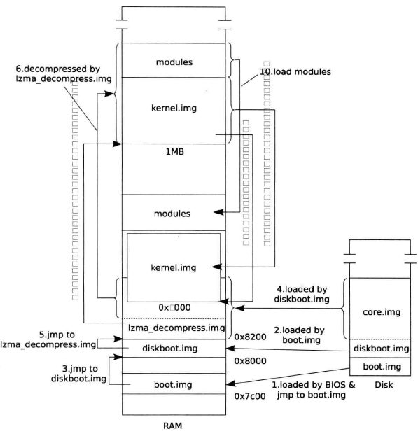
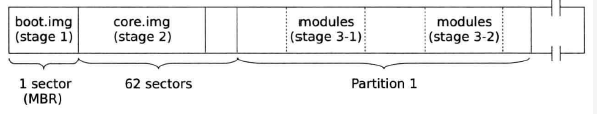
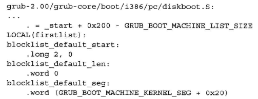
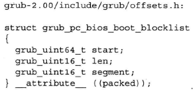
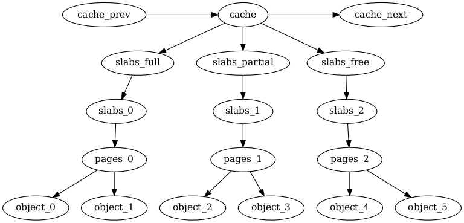

Table of Contents
1 Booting
1.1 BIOS 阶段
- 加电启动时： CPU RESET，初始化寄存器，执行物理地址
0xfffffff0处代码(BIOS，实地址模式)。(硬件把这个地址映射到 ROM BIOS 里)。 - POST(Power-On Self-Test，上电自检)：对计算机硬件执行一系列的测试，用来检测现在都有什么设备以及这些设备是否正常工作。在这个阶段中，会显示一些信息，例如 BIOS 版本号。
注：如今的 80x86、AMD64 和 Itanium 计算机使用高级配置与开机界面(Advanced Configuration and Power Interface，ACPI)标准。在 ACPI 兼容的 BIOS 中，启动代码会建立几个表来描述当前系统中的硬件设备。这些表的格式独立于设备生产商，而且可由操作系统读取以获得如何调用这些设备的信息。
- 初始化硬件设备：这个阶段在现代基于 PCI 的体系结构中相当重要，因为它可以保证所有的硬件设备操作不会引起 IRQ 线与 I/O 端口的冲突。在本阶段的最后，会显示系统中所安装的所有 PCI 设备的一个列表。
- 搜索一个操作系统来启动：实际上，根据 BIOS 的设置，这个过程可能要试图访问（按照用户预定义的次序）系统中软盘、硬盘和 CD-ROM 的第一个扇区(*引导扇区，MBR *)。
- 载入代码：只要找到一个有效的设备，就把第一个扇区的内容拷贝到 RAM 中从物理地址
0x00007c00开始的位置，然后跳转到这个地址处，开始执行刚才装载进来的代码。
1.2 引导程序
引导装入程序(boot loader)是由 BIOS 用来把操作系统的内核映像装载到 RAM 中所调用的一个程序。
1.2.1 GRUB

Figure 1: GRUB 启动过程
当跳转到 0x7c00 后，GRUB 开始执行：
- boot.img 加载 diskboot.img
- boot.img 使用 BIOS 中断
0x13加载 diskboot.img。 - BIOS 首先将 diskboot.img 读到
0x7000(BIOS 读缓存，GRUB_BOOT_MACHINE_BUFFER_SEG)处。 - boot.img 将其移动内存
0x8000(GRUB_BOOT_MACHINE_KERNEL_ADDR) 处。
- boot.img 使用 BIOS 中断
- diskboot.img 加载 core.img。
- diskboot.img 使用 BIOS 中断
0x13加载 core.img。 - BIOS 将 core.img 读到
0x70000(BIOS 读缓存) 处。 - diskboot.img 将其移动内存
0x8200处。 - 执行 lzma_decompress.img。
- diskboot.img 使用 BIOS 中断
- core.img 自解压：lzma_decompress.img 将 core.img 解压到内存
GRUB_MEMORT_MACHINE_DECOMPRESSION_ADDR(0x100000)处。解压函数_LzmaDecodeA定义在lzma_decode.S中。 kernel.img 将自己复制回
0x9000：因为 Linux 内核和 initramfs 可能被加载到内存从 1MB 开始的任何地方，所以 GRUB 要给他们指路，所以 GRUB 虽然使用了 1MB 以上的区域作为解压使用的缓冲区，但是解压后要移动回 1MB 以下的部分。/* grub/grub-core/kern/i386/pc/startup.S */ // 移动 kernel.img 的代码在 kernel.img 的开头文件 startup.S _start: __start: .code32 // ... movl %ecx, (LOCAL(real_to_prot_addr) - _start) (%esi) movl %edi, (LOCAL(prot_to_real_addr) - _start) (%esi) movl %eax, (EXT_C(grub_realidt) - _start) (%esi) movl $(_start), %edi rep movsb // ... movl $LOCAL (cont), %esi jmp *%esi LOCAL(cont): subl %edi, %ecx /* clean out */ xorl %eax, %eax cld rep stosb movl %edx, EXT_C(grub_boot_device) /* * Call the start of main body of C code. */ call EXT_C(grub_main)
- startup.S 调用 x86 的指令
movsb移动映像。 esi是移动的源地址(0x100000),edi是移动的目的地址(被设置为_start的地址0x9000)ecx是移动的字节数，startup.S 只移动从_edata(表示 kernel.img 的数据段结束) 到_start的指令和数据，表示 startup.S 只是将 kernel.img 移动到0x9000并没有移动模块(模块需要重定向)。- 移动完 kernel.img 后，startup.S 使用跳转指令
jmp到移动后的位置继续执行，然后调用grub_main进入 c 语言写的核心部分。 grub_main调用函数grub_load_modules装配模块，然后调用grub_load_normal_mode加载 normal 模块// Grub/grub-core/kern/main.c void __attribute__ ((noreturn)) grub_main (void) { //... grub_load_modules (); //... grub_load_normal_mode (); }
- startup.S 调用 x86 的指令
1.2.2 GRUB 映像的构成
- 由于现代操作系统的复杂性，Bootloader 仅仅一个扇区已经不够了，GRUB 将除 MBR 里的部分代码"嵌入"到 MBR 和第一个分区之间的 空闲区域 ，这相对比较安全。
- 空闲区域的大小是有限的，GRUB 采用了模块化的设计方案，来控制嵌入到空闲区域的大小。
MBR 将映像分为三个部分：MBR 中的 boot.img、嵌入空闲扇区的 core.img 和 存储在文件系统的模块。

Figure 2: 在MBR分区模式下以嵌人方式安装的GRUB
- boot.img 和 core.img：使用读写磁盘扇区的方式访问
- 模块：使用文件系统访问
- MBR 映像 (boot.img)
boot.img 主要功能将 core.img 中的第一个扇区载入内存。
- 保存 core.img 的第一个扇区的位置，kernel_sector 处，即
GRUB_BOOT_MACHINE_KERNEL_SECTOR(0x5c)处。 - boot.img 使用 BIOS 提供的中断向量
0x13(基于扇区的磁盘读写服务)，以支持 LBA 模式的磁盘为例： BIOS 将地址kernel_sector处指示的扇区号所在的扇区(一个扇区)的内容载入内存，boot.img 把读入的扇区内容移动到符号kernel_address处指示的地址，并跳转到kernel_address执行。 kernel_address的值为宏GRUB_BOOT_MACHINE_KERNEL_ADDR(0x8000)
- 保存 core.img 的第一个扇区的位置，kernel_sector 处，即
- GRUB 核心映像(core.img)
core.img 包括多个映像和模块，以从硬盘启动为例：
Figure 3: core.img 构成示意图
diskboot.img：diskboot.img 用来加载 core.img 中除 diskboot.img 外的其余部分。占据 core.img 中的第一个扇区(boot.img 加载的 core.img 的第一个扇区)。 在 GRUB 安装时，会将 core.img 占据的扇区号写入 diskboot.img 中。

- GRUB_BOOT_MACHINE_KERNEL_SEG(0x800)：类似带参数的宏，对于使用 x86 架构的PC，MACHINE 会被替换为 I386_PC，表示将 core.img 其余部分载入到 0x8200 处。
- diskboot.img 的最后 12 字节记录的是一个
blocklist(代表一个连续的扇区)start：起始扇区len：扇区的数量segment：扇区加载到内存的段地址
- 为了控制 core.img 的体积，GRUB 将 core.img 进行了压缩(kernel.img 和模块)
- 对于基于 x86 架构的 PC，GRUB 默认使用的是 lzma 压缩算法。
- GRUB 将 lzma 算法的解压缩代码编译为 lzma_decompress.img，连接在 diskboot.img 的后面，diskboot.img 将 core.img 加载进内存后，将跳转到 lzma_decompress.img：
- kernel.img 的主入口函数是
grub_main - 鉴于嵌入区域的尺寸有限，因此只有关键的模块才能包含到 core.img 中，即文件系统模块(只有支持文件系统，才可以读入其他模块)。
注：文件系统模块载入内存还需要重定向(grub_load_modules 函数)。
1.2.3 加载内核和 initramfs
grub 根据下列参数确定加载位置
pref_address(引导参数，默认0x1000000)：支持重定向。GRUB_LINUX_BZIMAGE_ADDR(0x100000)：不支持重定向。
然后计算保护模式的内核尺寸将其加载到加载位置。
- normal 模块读取并解析 GRUB 配置文件 grub.cfg(一般在
/boot/grub/grub.cfg) - grub.cfg 根据里面的具体命令，加载相应的模块(命令和模块的关系记录在 command.lst 中，一般在
/boot/grub/i386-pc)
加载内核及 initramfs
// grub/grub-core/loader/i386/linux.c 1140行 GRUB_MOD_INIT(linux) { cmd_linux = grub_register_command ("linux", grub_cmd_linux, 0, N_("Load Linux.")); cmd_initrd = grub_register_command ("initrd", grub_cmd_initrd, 0, N_("Load initrd.")); my_mod = mod; }
- 命令
linux负责加载内核，回调函数是grub_cmd_linux，执行操作如下:- 确认内核希望加载的地址，如果支持重定位，读取
pref_address(默认0x1000000) 作为内核加载位置。否则加载到位置GRUB_LINUX_BZIMAGE_ADDR(0x100000) - 调用
allocate_pages为内核映像分配内存，同时设置指针prot_mode_mem指向内核分配的内存，变量prot_mode_target设为该内存的地址 - 修改引导参数成员
code32_start(0x100000)为prot_mode_target(考虑特殊情况)。 计算实模式部分的尺寸(由于不需要加载实模式部分)，定位保护模式开始的地方，确定保护模式的尺寸。
real_size = setup_sects << GRUB_DISK_SECTOR_BITS; prot_file_size = grub_file_size (file) - real_size - GRUB_DISK_SECTOR_SIZE;
- 加载内核(不包含实模式部分的内核)，使用文件系统驱动提供的接口
grub_file_read。
- 确认内核希望加载的地址，如果支持重定位，读取
- 命令
initrd负责加载 initramfs，回调函数是grub_cmd_initrd- 确定加载的位置。
- 调用
grub_relocator_alloc_chunk_align指定范围内找一个合适位置(GRUB 采用的策略是尽可能将 initramfs 加载到高地址处) - 将指针
initrd_mem指向加载 initramfs 分配的内存，并将这块内存的物理地址记录到变量initrd_mem_tartget中。 - 加载内核到内存
initrd_mem处，考虑存在多个 initrd 使用 for 循环。 将 initramfs 的尺寸、加载的位置记录到引导参数中。
将控制权交给内核: GRUB 将记录引导参数的全局变量放置到传统的实模式占据的位置。然后通过一个长跳转(
code32_start)，GRUB 将控制全交给了内核(arch/x86/boot/compressed/head_64.S ENTRY(startup_32))。
1.3 引导协议
1.3.1 内存布局
~ ~
| Protected-mode kernel |
100000 +------------------------+
| I/O memory hole |
0A0000 +------------------------+
| Reserved for BIOS | Leave as much as possible unused
~ ~
| Command line | (Can also be below the X+10000 mark)
X+10000 +------------------------+
| Stack/heap | For use by the kernel real-mode code.
X+08000 +------------------------+
| Kernel setup | The kernel real-mode code.
| Kernel boot sector | The kernel legacy boot sector.
X +------------------------+
| Boot loader | <- Boot sector entry point 0000:7C00
001000 +------------------------+
| Reserved for MBR/BIOS |
000800 +------------------------+
| Typically used by MBR |
000600 +------------------------+
| BIOS use only |
000000 +------------------------+
1.3.2 16 位引导协议
该协议约定 Bootloader 和内核之间分享的数据存储的位置、大小以及哪些由内核提供给 Bootloader，哪些由 Bootloader 提供给内核(引导参数 boot_params )。
引导参数在内核 1F1 偏移处，该部分代码位于 arch/x86/boot/header.S 292行
.section ".header", "a" .globl sentinel sentinel: .byte 0xff, 0xff /* Used to detect broken loaders */ .globl hdr hdr: setup_sects: .byte 0 /* Filled in by build.c */ root_flags: .word ROOT_RDONLY syssize: .long 0 /* Filled in by build.c */ ram_size: .word 0 /* Obsolete */ vid_mode: .word SVGA_MODE root_dev: .word 0 /* Filled in by build.c */ boot_flag: .word 0xAA55 # offset 512, entry point .globl _start _start: .byte 0xeb # short (2-byte) jump .byte start_of_setup-1f 1:
查看链接脚本 arch/x86/boot/setup.ld
// .header 段在 495 处，.header 和 _start 恰好是 512(0x200) 的偏移。 ENTRY(_start) SECTIONS { . = 0; .bstext : { *(.bstext) } .bsdata : { *(.bsdata) } . = 495; .header : { *(.header) }
| Offset/Size | Proto | Name | Meaning |
|---|---|---|---|
| 01F1/1 | ALL(1 | setup_sects | The size of the setup in sectors |
| 01F2/2 | ALL | root_flags | If set, the root is mounted readonly |
| 01F4/4 | 2.04+(2 | syssize | The size of the 32-bit code in 16-byte paras |
| 01F8/2 | ALL | ram_size | DO NOT USE - for bootsect.S use only |
| 01FA/2 | ALL | vid_mode | Video mode control |
| 01FC/2 | ALL | root_dev | Default root device number |
| 01FE/2 | ALL | boot_flag | 0xAA55 magic number |
| 0200/2 | 2.00+ | jump | Jump instruction |
| 0202/4 | 2.00+ | header | Magic signature "HdrS" |
| 0206/2 | 2.00+ | version | Boot protocol version supported |
| 0208/4 | 2.00+ | realmode_swtch | Boot loader hook (see below) |
| 020C/2 | 2.00+ | start_sys_seg | The load-low segment (0x1000) (obsolete) |
| 020E/2 | 2.00+ | kernel_version | Pointer to kernel version string |
| 0210/1 | 2.00+ | type_of_loader | Boot loader identifier |
| 0211/1 | 2.00+ | loadflags | Boot protocol option flags |
| 0212/2 | 2.00+ | setup_move_size | Move to high memory size (used with hooks) |
| 0214/4 | 2.00+ | code32_start | Boot loader hook (see below) |
| 0218/4 | 2.00+ | ramdisk_image | initrd load address (set by boot loader) |
| 021C/4 | 2.00+ | ramdisk_size | initrd size (set by boot loader) |
| 0220/4 | 2.00+ | bootsect_kludge | DO NOT USE - for bootsect.S use only |
| 0224/2 | 2.01+ | heap_end_ptr | Free memory after setup end |
| 0226/1 | 2.02+(3 | ext_loader_ver | Extended boot loader version |
| 0227/1 | 2.02+(3 | ext_loader_type | Extended boot loader ID |
| 0228/4 | 2.02+ | cmd_line_ptr | 32-bit pointer to the kernel command line |
| 022C/4 | 2.03+ | initrd_addr_max | Highest legal initrd address |
| 0230/4 | 2.05+ | kernel_alignment | Physical addr alignment required for kernel |
| 0234/1 | 2.05+ | relocatable_kernel | Whether kernel is relocatable or not |
| 0235/1 | 2.10+ | min_alignment | Minimum alignment, as a power of two |
| 0236/2 | 2.12+ | xloadflags | Boot protocol option flags |
| 0238/4 | 2.06+ | cmdline_size | Maximum size of the kernel command line |
| 023C/4 | 2.07+ | hardware_subarch | Hardware subarchitecture |
| 0240/8 | 2.07+ | hardware_subarch_data | Subarchitecture-specific data |
| 0248/4 | 2.08+ | payload_offset | Offset of kernel payload |
| 024C/4 | 2.08+ | payload_length | Length of kernel payload |
| 0250/8 | 2.09+ | setup_data | 64-bit physical pointer to linked list of struct setup_data |
| 0258/8 | 2.10+ | pref_address | Preferred loading address |
| 0260/4 | 2.10+ | init_size | Linear memory required during initialization |
| 0264/4 | 2.11+ | handover_offset | Offset of handover entry point |
1.3.3 32 位引导协议
- 除了传统的引导参数(
struct boot_params)，Bootloader 取代内核实模式部分负责收集硬件信息(zero-page.txt) - 然后，Bootloader 跳转到
code32_start处，即内核被加载的起始位置。
在进入时，CPU 的初始化状态
- CPU 必须处于启动分页的 64 位模式
- setup_header.init_size 的范围为从内核被加载的起始地址和零页面以及命令行缓冲区获得的
ident映射。- 加载 GDT 描述符(4G 平坦模式)，选择子为
__BOOT_CS(0x10, 执行/读取)和__BOOT_DS(0x18, 读/写)cs为__BOOT_CS，ds、es、ss为__BOOT_DS。- 禁用中断。
esi保存struct boot_params的基地址。ebp、edi、ebx必须为 0。
1.3.4 64 位引导协议
- 除了传统的引导参数(
struct boot_params)，Bootloader 取代内核实模式部分负责收集硬件信息(zero-page.txt) - 然后，Bootloader 跳转到
code32_start处，即内核被加载的起始位置 + 0x200。
在进入时，CPU 的初始化状态
- CPU 必须处于启动分页的 64 位模式
- setup_header.init_size 的范围为从内核被加载的起始地址和零页面以及命令行缓冲区获得的
ident映射。- 加载 GDT 描述符(4G 平坦模式)，选择子为
__BOOT_CS(0x10, 执行/读取)和__BOOT_DS(0x18, 读/写)cs为__BOOT_CS，ds、es、ss为__BOOT_DS。- 禁用中断。
esi保存struct boot_params的基地址。ebp、edi、ebx必须为 0。
1.4 内核代码的入口
1.4.1 startup_32
该部分代码位于 arch/x86/boot/compressed/head_64.S 48 。
- 检查
boot_params的loadflags的KEEP_SEGMENTS位：确保段寄存器都设置为基地址都为 0 的平坦段。- 如果为 0：重新加载段寄存器，
ds、es、ss设为(__BOOT_DS,0x18)。 - 如果为 1：不重新加载段寄存器。
- 如果为 0：重新加载段寄存器，
计算实际被加载的内存地址, 保存到
ebpleal (BP_scratch+4)(%esi), %esp call 1f 1: popl %ebp subl $1b, %ebp
- 建立栈和检查 CPU 是否支持
long mode和sse，不支持则hlt。 设置
ebp为内核被加载的地址，ebx为临时移动内核映像的地址，确保安全的就地解压缩(LOAD_PHYSICAL_ADDR + init_size(内核映像解压缩后需要的大小) - 压缩内核的结束位置)。注：如果配置了可重定向，检查被加载的内核是否对齐(可能存在boot loader 未将内核加载到指定位置)，若没有对齐使之对齐，设为
LOAD_PHYSICAL_ADDR。- 准备进入 64 位模式：
重新加载
GDT：一个 32 位内核代码段，一个 64 位内核段，内核数据段，两个任务描述符。gdt: .word gdt_end - gdt .long gdt .word 0 .quad 0x00cf9a000000ffff /* __KERNEL32_CS */ .quad 0x00af9a000000ffff /* __KERNEL_CS */ .quad 0x00cf92000000ffff /* __KERNEL_DS */ .quad 0x0080890000000000 /* TS descriptor */ .quad 0x0000000000000000 /* TS continued */ gdt_end:
- 启动页表模式
4-level mode：x86_64(48 位地址总线，256 TB)。
- 检查 SEV，并构建页表(4 G大小)：初始化 24 kb内存(置 0)，分配 6 个页表(每个页表分配了 4kb)。
- 一个 Page Map Level 4(PML4)，包含一个表项指向
- 一个 Page Directory Pointer(PDP)，包含 4 个表项
- 4 个 Page Directory tables，共 2048 个表项
- 在 EFER(Extended Feature Enable Register) 启动 long mode。
ldtr标记为无效,tr设为__BOOT_TSS(指向 4*8 段描述符)。- 设置
CR0的PG、PE位，执行lret(__KERNEL_CS:startup_64 + LOAD_PHYSICAL_ADDR，如：0X0010:0X1000200)，即跳转到startup_64
1.4.2 startup_64
该部分代码位于 arch/x86/boot/compressed/head_64.S 253 。
- 初始化除
cs以外的段寄存器(置零) 设置
rbp为内核被加载的地址，rbx为临时移动内核映像的地址，确保安全的就地解压缩(LOAD_PHYSICAL_ADDR + (init_size(内核解压缩后需要的大小) - 压缩内核的结束位置))。注：如果配置了可重定向，检查被加载的内核是否对齐(可能存在boot loader 未将内核加载到指定位置)，若没有对齐使之对齐，设为
LOAD_PHYSICAL_ADDR#+END_QUOTE。设置栈，计算实际被加载的内存地址的起始位置保存到
rdi，调用adjust_got#+BEGIN_QUOTE
adjust_got：调整 got(global offset table，全局变量运行时地址)。rax：撤销上一次调整(第一次为 0)rdi：新的调整
- 重新加载
GDT(确保有 32 code segment)：一个 32 位内核代码段，一个 64 位内核段，内核数据段，两个任务描述符。 - 切换页表模式: 若想在 long mode 下的 4-level 启动 5-level 设置 CR4.LA57 将触发 #GP(反之亦然), 所以需要先取消 long mode, 然后在低内存(针对内核处在 4G 以上的情况)从 4-level 切换到 5-level, 同时还需要将
top_table驻留在较低内存中(32-bit mode 无法加载 64-bit 的值)。- 调用
paging_prepare:- 首先寻找 trampoline 的位置保存在
paging_config.trampoline_start - 将
paging_config.trampoline_start原本的内存暂存在trampoline_save - 将 top_table(当前 cr3 的页表, 仅一个页表) 和
trampoline_32bit_src代码移动到paging_config.trampoline_start的位置 返回 rax, 即
paging_config// arch/x86/boot/compressed/pgtable_64.c struct paging_config { // trampoline_32bit_src unsigned long trampoline_start; unsigned long l5_required; // 需要 l5 设为 1 };
- 首先寻找 trampoline 的位置保存在
- 执行
trampoline_32bit_src代码: 切换页表模式 - 使用
trampoline_save恢复paging_config.trampoline_start所在保存地址的内存, 并填充top_pgtable设置 cr3 为top_pgtable。
- 调用
为解压缩内核做准备
- 设置 stack 为
rbx(临时移动内核的起始地址) + boot_stack_end=，=EFLAGS置零。 - 调用
adjust_got:rdi为rbx(临时移动内核的地址)。 计算到
_bss为止的内核大小,并将该部分的内核复制到rbx位置。pushq %rsi leaq (_bss-8)(%rip), %rsi leaq (_bss-8)(%rbx), %rdi movq $_bss /* - $startup_32 */, %rcx shrq $3, %rcx std rep movsq cld popq %rsi
跳转到
relocated + rbx位置leaq relocated(%rbx), %rax jmp *%rax
- 清理 BSS(置零)
- 调用
extract_kernel(arch/x86/boot/compressed/misc.c 339行)函数：解压缩内核。 - 跳转到
rax即 解压后内核 的起始位置 (arch/x86/kernel/head_64.S)
1.4.3 init_size 的计算
/* 保证安全的就地解压 */ /* For more information, please refer to RFC 1951 and RFC 1952. */ #define ZO_z_extra_bytes ((ZO_z_output_len >> 8) + 65536) #if ZO_z_output_len > ZO_z_input_len # define ZO_z_extract_offset (ZO_z_output_len + ZO_z_extra_bytes - ZO_z_input_len) #else # define ZO_z_extract_offset ZO_z_extra_bytes #endif /* 保证偏移对齐 */ #if (ZO__ehead - ZO_startup_32) > ZO_z_extract_offset # define ZO_z_min_extract_offset ((ZO__ehead - ZO_startup_32 + 4095) & ~4095) #else # define ZO_z_min_extract_offset ((ZO_z_extract_offset + 4095) & ~4095) #endif #define ZO_INIT_SIZE (ZO__end - ZO_startup_32 + ZO_z_min_extract_offset) #define VO_INIT_SIZE (VO__end - VO__text) #if ZO_INIT_SIZE > VO_INIT_SIZE # define INIT_SIZE ZO_INIT_SIZE #else # define INIT_SIZE VO_INIT_SIZE #endif init_size: .long INIT_SIZE # kernel initialization size
1.4.4 解压缩内核
|-----compressed kernel image------|
V V
0 extract_offset +INIT_SIZE
|-----------|---------------|-------------------------|--------|
| | | |
VO__text startup_32 of ZO VO__end ZO__end
^ ^
|-------uncompressed kernel image---------|
extract_kernel函数负责解压缩内核，参数有：
rmode：指向boot_params的指针。heap：指向boot_heap的指针，为解压缩分配堆的内存。input_data：指向压缩内核的起始地址input_len：压缩内核的长度output：解压缩内核后的起始地址output_len：解压缩内核的长度
- 首先打印关于解压缩的一些信息
- 调用
choose_random_location：选择内核映像将被解压缩的内存位置(kASLR，Address space layout randomization)，允许内核解压到一个随机的地址，为了安全考虑。- 其中设置 5-level mode 相关变量的值
- 校验随机地址的选择正确对齐且地址没有错误。
打印 Decompressing Linux…，并调用
__decompress，该函数取决于在内核编译期间选择的解压缩算法。#ifdef CONFIG_KERNEL_GZIP #include "../../../../lib/decompress_inflate.c" #endif #ifdef CONFIG_KERNEL_BZIP2 #include "../../../../lib/decompress_bunzip2.c" #endif #ifdef CONFIG_KERNEL_LZMA #include "../../../../lib/decompress_unlzma.c" #endif #ifdef CONFIG_KERNEL_XZ #include "../../../../lib/decompress_unxz.c" #endif #ifdef CONFIG_KERNEL_LZO #include "../../../../lib/decompress_unlzo.c" #endif
- 解析 elf：将内核的各个段进行 2M 对齐
- 处理重定向
- 返回
2 Initialization
2.1 arch/x86/kernel/head_64.S:startup_64
- 内核可能加载到与编译时不同的地址，需要修复在页表的物理地址并重新加载。
- 调用
verify_cpu，检查 SSE 和 longmode，在 intel 将 xd 位清零(若 bootloader 进入 startup_64 则需要重新检查 cpu，防止一些 bootloader 没有进行 cpu 检查)。 __startup_64fixup early page table- provide
early_dynamic_pgts(64 page tables) for page table management - three kernel physical address mapping(use
__PAGE_KERNEL_LARGE_EXEC)0x0000000000000000 - kernel size offset0x0000000040000000 - kernel size offset0xffffffff80000000 - kernel size offset
0xffffffffff900000-0xfffffffffffaffff: 4MB fixmap range0xffffffffffb00000-0xffffffffffffffff: 6MB reserved spaces0xffffffffffe00000-0xffffffffffffffff: 2MB unused hole
/* arch/x86/kernel/head_64.S 370 */ /* Automate the creation of 1 to 1 mapping pmd entries */ #define PMDS(START, PERM, COUNT) \ i = 0 ; \ .rept (COUNT) ; \ .quad (START) + (i << PMD_SHIFT) + (PERM) ; \ i = i + 1 ; \ .endr __INITDATA NEXT_PGD_PAGE(early_top_pgt) .fill 512,8,0 // PGD需要 8k 对齐早期页表不需要这么严格 // 但是为了能够使用像 set_pgd() 的实现而不担心 4k 和 8k // 配置 CONFIG_PAGE_TABLE_ISOLATION // PTI_USER_PGD_FILL 512/0 .fill PTI_USER_PGD_FILL,8,0 NEXT_PAGE(early_dynamic_pgts) // EARLY_DYNAMIC_PAGE_TABLES 64 .fill 512*EARLY_DYNAMIC_PAGE_TABLES,8,0 .data // ... NEXT_PAGE(level3_kernel_pgt) .fill L3_START_KERNEL,8,0 /* (2^48-(2*1024*1024*1024)-((2^39)*511))/(2^30) = 510 */ .quad level2_kernel_pgt - __START_KERNEL_map + _KERNPG_TABLE_NOENC .quad level2_fixmap_pgt - __START_KERNEL_map + _PAGE_TABLE_NOENC NEXT_PAGE(level2_kernel_pgt) // 用一页来填充 kernel PMDS(0, __PAGE_KERNEL_LARGE_EXEC, KERNEL_IMAGE_SIZE/PMD_SIZE) NEXT_PAGE(level2_fixmap_pgt) .fill 506,8,0 .quad level1_fixmap_pgt - __START_KERNEL_map + _PAGE_TABLE_NOENC /* 8MB reserved for vsyscalls + a 2MB hole = 4 + 1 entries */ .fill 5,8,0 NEXT_PAGE(level1_fixmap_pgt) .fill 512,8,0 #undef PMDS .data .align 16 .globl early_gdt_descr early_gdt_descr: .word GDT_ENTRIES*8-1 early_gdt_descr_base: .quad INIT_PER_CPU_VAR(gdt_page)
相关的变量和函数
load_delta: offset of compile address and run addressfixup_pointer: 返回变量实际的物理地址static void __head *fixup_pointer(void *ptr, unsigned long physaddr) { // ptr 编译时变量地址, _text 编译时内核起始地址(0xffffffff81000000) // 实际的内核起始的物理地址 return ptr - (void *)_text + (void *)physaddr; }
- provide
- 调用
- enable page mode
- enable
PAE modeandPGE mode, settingcr3withearly_top_pgt 执行跳转操作确保在虚拟地址执行
movq $1f, %rax ANNOTATE_RETPOLINE_SAFE jmp *%rax
- enable
- 检查 cpu nx 是否实现，and setup EFER(Extended Feature Enable Register)
setup cr0:
#define CR0_STATE (X86_CR0_PE | X86_CR0_MP | X86_CR0_ET | \ X86_CR0_NE | X86_CR0_WP | X86_CR0_AM | \ X86_CR0_PG)
设置栈, 并清空标志位 (为运行任何代码
c code)MOVQ initial_stack（％RIP ），％RSP pushq $ 0 popfq ... GLOBAL(initial_stack) .quad init_thread_union + THREAD_SIZE - SIZEOF_PTREGS
THREAD_SIZE: 线程大小取决于KASAN，若没有配置KASAN则THREAD_SIZE为 16kb。#ifdef CONFIG_KASAN #define KASAN_STACK_ORDER 1 #else #define KASAN_STACK_ORDER 0 #endif #define THREAD_SIZE_ORDER (2 + KASAN_STACK_ORDER) #define THREAD_SIZE (PAGE_SIZE << THREAD_SIZE_ORDER)#ifdef CONFIG_KASAN
init_thread_union:init_task被链接到init_thread_union的内部// include/linux/sched.h 1560 union thread_union { #ifndef CONFIG_ARCH_TASK_STRUCT_ON_STACK struct task_struct task; #endif #ifndef CONFIG_THREAD_INFO_IN_TASK struct thread_info thread_info; #endif unsigned long stack[THREAD_SIZE/sizeof(long)]; }; // include/asm-generic/vmlinux.lds.h #define INIT_TASK_DATA(align) \ . = ALIGN(align); \ __start_init_task = .; \ init_thread_union = .; \ init_stack = .; \ KEEP(*(.data..init_task)) \ KEEP(*(.data..init_thread_info)) \ . = __start_init_task + THREAD_SIZE; \ __end_init_task = .; // init/init_task.h #ifdef CONFIG_ARCH_TASK_STRUCT_ON_STACK #define __init_task_data __attribute__((__section__(".data..init_task"))) #else #define __init_task_data /**/ #endif
加载 gdt
// arch/x86/kernel/head_64.S 461 early_gdt_descr: .word GDT_ENTRIES*8-1 early_gdt_descr_base: .quad INIT_PER_CPU_VAR(gdt_page)
GDT_ENTRIES: x86_64 为 16, x86_32 为 32INIT_PER_CPU_VAR(gdt_page): gdt 的地址, 对于 x86_64 定义了以下描述符GDT_ENTRY_KERNEL32_CS、GDT_ENTRY_KERNEL_CS、GDT_ENTRY_KERNEL_DS、GDT_ENTRY_DEFAULT_USER32_CS、GDT_ENTRY_DEFAULT_USER_DS、GDT_ENTRY_DEFAULT_USER_CS// arch/x86/include/asm/percpu.h #ifdef CONFIG_X86_64_SMP #define INIT_PER_CPU_VAR(var) init_per_cpu__##var #else #define INIT_PER_CPU_VAR(var) var #endif
其声明和定义使用了下面两个宏: 保证 per-cpu 变量必须对齐
// include/linux/percpu-defs.h #define DECLARE_PER_CPU_PAGE_ALIGNED(type, name) \ DECLARE_PER_CPU_SECTION(type, name, "..page_aligned") \ __aligned(PAGE_SIZE) #define DEFINE_PER_CPU_PAGE_ALIGNED(type, name) \ DEFINE_PER_CPU_SECTION(type, name, "..page_aligned") \ __aligned(PAGE_SIZE)
// arch/x86/include/asm/desc.h 声明 DECLARE_PER_CPU_PAGE_ALIGNED(struct gdt_page, gdt_page); // arch/x86/kernel/cpu/common.c 定义 DEFINE_PER_CPU_PAGE_ALIGNED(struct gdt_page, gdt_page) = { .gdt = { #ifdef CONFIG_X86_64 /* * We need valid kernel segments for data and code in long mode too * IRET will check the segment types kkeil 2000/10/28 * Also sysret mandates a special GDT layout * * TLS descriptors are currently at a different place compared to i386. * Hopefully nobody expects them at a fixed place (Wine?) */ [GDT_ENTRY_KERNEL32_CS] = GDT_ENTRY_INIT(0xc09b, 0, 0xfffff), [GDT_ENTRY_KERNEL_CS] = GDT_ENTRY_INIT(0xa09b, 0, 0xfffff), [GDT_ENTRY_KERNEL_DS] = GDT_ENTRY_INIT(0xc093, 0, 0xfffff), [GDT_ENTRY_DEFAULT_USER32_CS] = GDT_ENTRY_INIT(0xc0fb, 0, 0xfffff), [GDT_ENTRY_DEFAULT_USER_DS] = GDT_ENTRY_INIT(0xc0f3, 0, 0xfffff), [GDT_ENTRY_DEFAULT_USER_CS] = GDT_ENTRY_INIT(0xa0fb, 0, 0xfffff), #else [GDT_ENTRY_KERNEL_CS] = GDT_ENTRY_INIT(0xc09a, 0, 0xfffff), [GDT_ENTRY_KERNEL_DS] = GDT_ENTRY_INIT(0xc092, 0, 0xfffff), [GDT_ENTRY_DEFAULT_USER_CS] = GDT_ENTRY_INIT(0xc0fa, 0, 0xfffff), [GDT_ENTRY_DEFAULT_USER_DS] = GDT_ENTRY_INIT(0xc0f2, 0, 0xfffff), /* * Segments used for calling PnP BIOS have byte granularity. * They code segments and data segments have fixed 64k limits, * the transfer segment sizes are set at run time. */ /* 32-bit code */ [GDT_ENTRY_PNPBIOS_CS32] = GDT_ENTRY_INIT(0x409a, 0, 0xffff), /* 16-bit code */ [GDT_ENTRY_PNPBIOS_CS16] = GDT_ENTRY_INIT(0x009a, 0, 0xffff), /* 16-bit data */ [GDT_ENTRY_PNPBIOS_DS] = GDT_ENTRY_INIT(0x0092, 0, 0xffff), /* 16-bit data */ [GDT_ENTRY_PNPBIOS_TS1] = GDT_ENTRY_INIT(0x0092, 0, 0), /* 16-bit data */ [GDT_ENTRY_PNPBIOS_TS2] = GDT_ENTRY_INIT(0x0092, 0, 0), /* * The APM segments have byte granularity and their bases * are set at run time. All have 64k limits. */ /* 32-bit code */ [GDT_ENTRY_APMBIOS_BASE] = GDT_ENTRY_INIT(0x409a, 0, 0xffff), /* 16-bit code */ [GDT_ENTRY_APMBIOS_BASE+1] = GDT_ENTRY_INIT(0x009a, 0, 0xffff), /* data */ [GDT_ENTRY_APMBIOS_BASE+2] = GDT_ENTRY_INIT(0x4092, 0, 0xffff), [GDT_ENTRY_ESPFIX_SS] = GDT_ENTRY_INIT(0xc092, 0, 0xfffff), [GDT_ENTRY_PERCPU] = GDT_ENTRY_INIT(0xc092, 0, 0xfffff), GDT_STACK_CANARY_INIT #endif } };
设置段寄存器
xorl %eax,%eax movl %eax,%ds movl %eax,%ss movl %eax,%es movl %eax,%fs movl %eax,%gs movl $MSR_GS_BASE,%ecx movl initial_gs(%rip),%eax movl initial_gs+4(%rip),%edx wrmsr
the
gsregister always points to the bottom of theirqstackunion. On the x86_64, thegsregister is shared by per-cpu area and stack canary. All per-cpu symbols are zero based and thegspoints to the base of the per-cpu area. You already know thatsegmented memory modelis abolished in the long mode, but we can set the base address for the two segment registers-fsandgswith the Model specific registers and these registers can be still be used as address registers.- 跳转到
x86_64_start_kernel(arch/x86/kernel/head64.c, c code)
2.2 arch/x86/kernel/head64.c:x86_64_start_kernel
检查下列的值是否符合条件，若不符合则编译错误。
// arch/x86/boot/boot.h !!condition 相当于 condition != 0 #define BUILD_BUG_ON(condition) ((void)sizeof(char[1 - 2*!!(condition)])) // arch/x86/kernel/head64.c 393 BUILD_BUG_ON(MODULES_VADDR < __START_KERNEL_map); BUILD_BUG_ON(MODULES_VADDR - __START_KERNEL_map < KERNEL_IMAGE_SIZE); BUILD_BUG_ON(MODULES_LEN + KERNEL_IMAGE_SIZE > 2*PUD_SIZE); BUILD_BUG_ON((__START_KERNEL_map & ~PMD_MASK) != 0); BUILD_BUG_ON((MODULES_VADDR & ~PMD_MASK) != 0); BUILD_BUG_ON(!(MODULES_VADDR > __START_KERNEL)); MAYBE_BUILD_BUG_ON(!(((MODULES_END - 1) & PGDIR_MASK) == (__START_KERNEL & PGDIR_MASK))); BUILD_BUG_ON(__fix_to_virt(__end_of_fixed_addresses) <= MODULES_END);
- 初始化
cpu_tlbstate.cr4(percpu)为当前 cr4 值。 - 清理除内核占用的页表以外的 early page tables
- clear
bssseg 清理
init_top_pgt(感觉没必要)，清理方式根据 cpu feature 选择// arch/x86/include/asm/page_64.h 47 static inline void clear_page(void *page) { // 如果支持 X86_FEATURE_ERMS 使用 clear_page_erms // 否则, 如果支持 X86_FEATURE_REP_GOOD 使用 clear_page_rep // 否则, 使用 clear_page_orig alternative_call_2(clear_page_orig, clear_page_rep, X86_FEATURE_REP_GOOD, clear_page_erms, X86_FEATURE_ERMS, "=D" (page), "0" (page) : "cc", "memory", "rax", "rcx"); }
- TODO 对 SME 进行早期的初始化, SME 支持可能会更新
early_pmd_flags以包含内存加密掩码，因此需要在可能产生页面错误的任何内容之前调用它。 - TODO
kasan_early_init - use early handler process initialize idt table(0-31) 2.2.1
- copy
real_mode_datatoboot_params, reset someboot_paramfor keeping the specification TODO:sme_unmap_bootdata - TODO
load_ucode_bsp set
init_top_pgtkernel mappinginit_top_pgt[511] = early_top_pgt[511];
- TODO initialize early x86 platform quirks.
- call
start_kernel() init/main.c/ 531
2.2.1 早期的中断处理
设置中断: 填充
idt_descr并将 idt_descr 的地址加载到 idt- x86_64: 为前32个中断(异常)设置中断处理程序
early_idt_handler_array - x86_32: 为所有的中断设置中断处理程序
early_ignore_irq
extern gate_desc idt_table[]; // arch/x86/include/asm/desc.h gate_desc idt_table[IDT_ENTRIES] __page_aligned_bss; // IDT_ENTRIES 256 arch/x86/kernel/idt.c
- x86_64: 为前32个中断(异常)设置中断处理程序
- 中断处理函数:
early_idt_handler_array: 32 个大小为 9 字节程序的数组 如果异常有错误代码，什么也不做。如果异常没有错误代码 将 0 压入栈(保持栈统一)。然后将中断向量号压栈并调用early_idt_handler_common// NUM_EXCEPTION_VECTORS 32, EARLY_IDT_HANDLER_SIZE 9 // arch/x86/include/asm/segment.h extern const char early_idt_handler_array[NUM_EXCEPTION_VECTORS][EARLY_IDT_HANDLER_SIZE]; // arch/x86/kernel/head_64.S ENTRY(early_idt_handler_array) i = 0 .rept NUM_EXCEPTION_VECTORS .if ((EXCEPTION_ERRCODE_MASK >> i) & 1) == 0 UNWIND_HINT_IRET_REGS pushq $0 # Dummy error code, to make stack frame uniform .else UNWIND_HINT_IRET_REGS offset=8 .endif pushq $i # 72(%rsp) Vector number jmp early_idt_handler_common UNWIND_HINT_IRET_REGS i = i + 1 .fill early_idt_handler_array + i*EARLY_IDT_HANDLER_SIZE - ., 1, 0xcc .endr UNWIND_HINT_IRET_REGS offset=16 END(early_idt_handler_array)
early_idt_handler_common: 保存相关的寄存器，根据vector number调用相应得异常处理函数early_make_pgtable:- 检查是否是无效地址，或者 early pgt 是否完成
- 检查异常地址在不同等级的页表所在位置的值。
- 不为零: 向下级页表搜索
- 为零: 检查
early_dynamic_pgts是否超过 64 若超过则重置，然后为异常地址所在位置的页表设置地址。
early_fixup_exception: 针对非 fault page 异常的处理- 忽略
X86_TRAP_NMI异常 - 搜索异常表 4.1
- 处理 bug 异常
- 打印相关异常信息
- 忽略
// arch/x86/kernel/head_64.S early_idt_handler_common: /* * The stack is the hardware frame, an error code or zero, and the * vector number. */ cld incl early_recursion_flag(%rip) /* The vector number is currently in the pt_regs->di slot. */ pushq %rsi /* pt_regs->si */ movq 8(%rsp), %rsi /* RSI = vector number */ movq %rdi, 8(%rsp) /* pt_regs->di = RDI */ pushq %rdx /* pt_regs->dx */ pushq %rcx /* pt_regs->cx */ pushq %rax /* pt_regs->ax */ pushq %r8 /* pt_regs->r8 */ pushq %r9 /* pt_regs->r9 */ pushq %r10 /* pt_regs->r10 */ pushq %r11 /* pt_regs->r11 */ pushq %rbx /* pt_regs->bx */ pushq %rbp /* pt_regs->bp */ pushq %r12 /* pt_regs->r12 */ pushq %r13 /* pt_regs->r13 */ pushq %r14 /* pt_regs->r14 */ pushq %r15 /* pt_regs->r15 */ UNWIND_HINT_REGS cmpq $14,%rsi /* Page fault? */ jnz 10f GET_CR2_INTO(%rdi) /* Can clobber any volatile register if pv */ call early_make_pgtable andl %eax,%eax jz 20f /* All good */ 10: movq %rsp,%rdi /* RDI = pt_regs; RSI is already trapnr */ call early_fixup_exception 20: decl early_recursion_flag(%rip) jmp restore_regs_and_return_to_kernel END(early_idt_handler_common)
early_ignore_irq:/* This is the default interrupt "handler" :-) */ ENTRY(early_ignore_irq) cld #ifdef CONFIG_PRINTK pushl %eax pushl %ecx pushl %edx pushl %es pushl %ds movl $(__KERNEL_DS),%eax movl %eax,%ds movl %eax,%es cmpl $2,early_recursion_flag je hlt_loop incl early_recursion_flag pushl 16(%esp) pushl 24(%esp) pushl 32(%esp) pushl 40(%esp) pushl $int_msg call printk call dump_stack addl $(5*4),%esp popl %ds popl %es popl %edx popl %ecx popl %eax #endif iret hlt_loop: hlt jmp hlt_loop ENDPROC(early_ignore_irq)
2.3 init/main.c:start_kernel
- 为
init_stack的结尾设置STACK_END_MAGIC(For easy inspection stack overflow) - TODO
debug_objects_early_init - TODO
cgroup_init_early local_irq_disable: Disable local IRQs(interrupts for current CPU). Do necessary setups, then enable them.boot_cpu_init(): first processor activation- get the bootstrap processor id with a call to
smp_processor_id - set current CPU mask for online, active, present and possible
- get the bootstrap processor id with a call to
page_address_init():print linux banner
[ 0.000000] Linux version 4.19.0-rc6 (yydcnjjw@own) (gcc version 8.2.1 20180831 (GCC)) #1 SMP Sun Oct 7 10:19:25 CST 2018
setup_arch(): architecture-dependent parts of initialization- memory init
- reserve memory block for the kernel
_text、_dataand_bsswhich starts from the_textsymbol and ends before_bss_stop - reserve memory for initrd
- reserve memory block for the kernel
- print kernel info which is the command line.
- TODO detects One Laptop Per Child support.
idt_setup_early_traps: initializes 4.3.4 (INTG, #DB - raised when theTFflag of rflags is set) and 4.3.5 (SYSG, #BP), allow thex86_64architecture to have early exception processing for the purpose of debugging via thekgdbearly_cpu_init: cpu init:- print kernel supported cpus with 7.1
- initialization
boot_cpu_datawhat isstruct cpuinfo_x86for doing minimum CPU detection early
- initialization ideal nops according to
cpuinfo_x86.x86_vendor - TODO Jump label support init
early_ioremap_init: early 3.3 initialization, 512 (2K) temporary boot-time mappings, used by early_ioremap(), before ioremap() is functional- TODO
setup_olpc_ofw_pgd: obtaining major and minor numbers for the root device
ROOT_DEV = old_decode_dev(boot_params.hdr.root_dev);
- setup different parameters as information about a screen
memory map setup: copy
e820_tabletoe820_table_kexecande820_table_firmware, then print e820 information[ 0.000000] BIOS-provided physical RAM map: [ 0.000000] BIOS-e820: [mem 0x0000000000000000-0x000000000009fbff] usable [ 0.000000] BIOS-e820: [mem 0x000000000009fc00-0x000000000009ffff] reserved [ 0.000000] BIOS-e820: [mem 0x00000000000f0000-0x00000000000fffff] reserved [ 0.000000] BIOS-e820: [mem 0x0000000000100000-0x0000000007fdffff] usable [ 0.000000] BIOS-e820: [mem 0x0000000007fe0000-0x0000000007ffffff] reserved [ 0.000000] BIOS-e820: [mem 0x00000000fffc0000-0x00000000ffffffff] reserved
parse_setup_data: bootparam:setup_datacopy_edd(): copy the BIOSEDDinformation fromboot_paramsinto a safe place- memory descriptor initialization
- 3.4 initialization
mpx_mm_init: initialization of the intel Memory Protection Extensions- initialization of the code/data/bss resources
x86_configure_nx(): configure nxparse_early_param(): parse early paramx86_report_nx(): print nx information of cpu according to cpu feature, command line option and More[ 0.000000] NX (Execute Disable) protection: active
memblock_x86_reserve_range_setup_data(): remaps memory for thesetup_dataand reserved memory block for the setup_data- TODO MPS
- finish with memory parsing:
e820__reserve_setup_data(): This function does almost the same asmemblock_x86_reserve_range_setup_data(), but it also callse820__range_updatewhich add new regions to thee820mapwith the given type which isE820_RESERVED_KERN.e820__finish_early_params():e820_add_kernel_range(): checks that.text,.dataand.bssmarked asE820RAMin thee820map. prints the warning message and remark if not.trm_bios_range(): update first 4096 bytes ine820MapasE820_RESERVEDe820__end_of_ram_pfn(): takes maximum page frame number on the certain architecture(MAX_ARCH_PFNis0x4000000000for x86_64).And print information about last page frame number and return it.- calculate
max_low_pfnwhich is the GB page frame number in the low memory or below first 4 GB. if installed more than 4 GB of RAM,max_low_pfnwill be result of thee820_end_of_low_ram_pfn.
- DMI(Desktop management interface) scanning: collecting information about computer with the DMI and following function:
dmi_scan_machine(): the function goes through the System Management BIOS structures and extracts information. And print.[ 0.000000] SMBIOS 2.8 present. [ 0.000000] DMI: QEMU Standard PC (i440FX + PIIX, 1996), BIOS 1.11.0-20171110_100015-anatol 04/01/2014
dmi_memdev_walk(): go over memory devices
find_smp_config(): finding of the SMP configuration.x86_init.mpparse.find_smp_config()is thedefault_find_smp_configfunction from thearch/x86/kernel/mpparse.cScan several specific locations bysmp_scan_configthat going in a loop through the given memory range and tries to findMP floating pointer structure. It checks that current byte points to theSMPsignature, checks checksum, checks ifmpf->specificationis 1 or 4(it must be 1 or 4 by specification) in the loop.[ 0.014511] found SMP MP-table at [mem 0x000f5d60-0x000f5d6f] mapped at [(____ptrval____)]
- Additional early memory initialization routines
early_alloc_pgt_buf(): extend brk by add 6/12 pgtable(4KB).reserve_brk(): remap brkcleanup_highmap(): clean entries which are not between_textandendmemblock_set_current_limit: set the limit for thememblockallocation.e820__memblock_alloc_reserved_mpc_new(): allocates additional slots in thee820mapfor MultiProcessor Specification table.
reserve_real_mode(): reserves low memory from0x0to1mbfor the trampoline to the real mode(for rebooting, etc.).trim_platform_memory_ranges(): trims certain memory regions.trim_low_memory_range(): reserves the first4kbpage inmemblockinit_mem_mapping(): reconstructs direct memory mappng and setups the direct mapping of the physical memory atPAGE_OFFSETidt_setup_early_pf(): Initialize the idt table with early pagefault handler.(head64.c has Initialized ?) 4.3.6setup_log_buf(1): setup kernel early cyclic buffer.reserve_inintrd(): relocatedinitrdramdisk image.acpi_table_ugrade()vsmp_init()io_delay_init()acpi_boot_table_init()early_acpi_boot_init()initmem_init()- Allocate are for 3.5:
dma_contiguous_reserve(): allocate area for theDirect memory access x86_init.paging.pagetable_init(): initialize sparse memory and zone sizes.prefil_possible_map(): calculates and writes to thecpu_possible_maskactual number of the CPUsx86_init.timers.wallclock_init(): initialize the wallclock device.register_refined_jiffies(CLOCK_TICK_RATE): registerrefined_jiffiesclocksource.
- memory init
boot_init_stack_canary(): set the canary value to protect interrupt stack overflowmm_init_cpumask(): set the 7.3 pointer to the memory descriptorcpumask(clear 0).setup_command_line(): takes pointer to the kernel command line allocates a couple of buffers to store command line.saved_command_line: will contain boot command lineinitcall_command_line: will contain boot command line. will be used in thedo_initcall_levelstatic_command_line: will contain command line for parameters parsing
setup_nr_cpu_ids(): setnr_cpu_ids(number of CPUs) according to the last bit in thecpu_possible_masksetup_per_cpu_areas(): setups memory areas for thepercpuvariables.smp_prepare_boot_cpu():arch/x86/kernel/smpboot.c- load the original GDT
- reload the per-cpu base
- fill
cpu_callout_maskbitmap with the current cpu: indicate which secondary processor can be initialized next. - set cpu state as online with the setting
cpu_statepercpu variable for the current processor
build_all_zonelists(NULL): set up the order of zones that allocations are preferred frompage_alloc_init(): setup thestartupandteardowncallbacks for theCPUHP_PAGE_ALLOC_DEADcpu hotplug state.parse_early_param(): handle linux kernel command line for no all architecture.jump_label_init(): initialize jump labelsetup_log_buf(): setup theprintklog buffervfs_caches_init_early(): do early initialization of the virtual file systemsort_main_extable(): sort the kernel's built-in exception table entries which are between__start___ex_tableand__stop___ex_table- TODO
trap_init(): initialize trap handlerscpu_init():syscall_init(): 5.2
mm_init(): initialization of the memory managerpage_ext_init_flatmem(): initializes extended data per page handingmem_init(): releases allbootmemkmem_cache_init(): initialize kernel cachepgtable_init(): initialize thepage->pt1kernel cachevmalloc_init(): initializevmallocinit_espfix_bsp(): prevent leaking of31:16bits of theespregister during returning to 16-bit stack
sched_init(): Scheduler initializationwait_bit_init(): initialization of the array ofwaitqueuesThebit_wait_tableis array of wait queues that will be used for wait/wake up of processes depends on the value of a designated bit.- initialization of
waitqueuesarray is calculating size of memory to allocate for theroot_task_group(sched_entity)andrunqueues. - allocate a space with the
kzallocfunctions and set pointers ofsched_entityandrunqueues. - initialize a
bandwidthof CPU forreal-timeanddeadlinetasks. - initialization of the
root domain: The real-time scheduler requires global resources to make scheduling decision. But unfortunately scalability bottlenecks appear as the number of CPUs increase. The concept ofroot_domainswas introduced for improving scalability ans avoid such bottlenecks. set_load_weight(): initialization ofper-cpurun queues with default values, we need to setupload weightof the first task in the systeminit_sched_fair_class(): Calculating next time period of the next calculation of CPU load and initialization of thefairclass.
- TODO
preempt_disable(): disable preemption - check IRQs state and disabling
Initialization of the integer ID managementradix_tree_init(): initialize kernel implementation of the Radix tree- 6.6 initialization:
rcu_bootup_announce(): print information about the RCUrcu_init_geometry(): compute the node tree geometry depends on the amount of CPUsrcu_init_one():
trace_init(): initialize tracing subsystemearly_irq_init():init_IRQ():tick_init:tick_broadcast_init(): Initialization oftick broadcastframework related data structures.tick_nohz_init(): Initialization offulltickless mode relate data structures.
init_timers():init_timer_cpus(): initialization of thetimer_basestructure for each processor.open_softirq(TIMER_SOFTIRQ, run_timer_softirq):
acpi_early_init():thread_stack_cache_init(): allocates cache for thethread_stack_cachecred_init(): allocate cache for the credentials(likeuid,gid, etc)fork_init():arch_task_cache_init(): initialization of the architecture-specific caches. allocate cache for thetask_xstatewhich representsFPUstate and sets up offsets and sizes of all extended states inxsavearea.set_max_threads(MAX_THREADS): calculate default maximum number of threads- initialize
signalhandler: set resource limit about signal
proc_caches_init(): allocate caches for the memory descriptors(ormm_structstructure)- allocate different SLAB caches with the call of the
kmem_cache_createsighand_cachep: manage information about installed signal handlerssignal_cachep: manage information about process signal descriptorfiles_cachep: manage information about opened filesfs_cachep: manage filesystem informationmm_cachep:mm_structvm_area_cachep: allocateSLABcache for the importantvm_area_structwhich used by the kernel to manage virtual memory space
mmap_init(): initialize virtual memory areaSLABnsproxy_cache_init(): initializeSLABfor namespaces
- allocate different SLAB caches with the call of the
buffer_init():- allocate cache for the
buffer_head(used for managing buffers) - calculate the maximum size of the buffers in memory(equal to the
10%of theZONE_NORMAL(all RAM from the 4GB on the x86_64))
- allocate cache for the
vfs_caches_init():pagecache_init(): initialize the ratio for the dirty pages.signals_init(): allocate a cache for thesigqueuestructures which represents queue of the real time signals.proc_root_init(): create the root for the procfscgroup_init(): make initialization of the rest of the cgroup subsystemtaskstats_init_early(): export per-task statistic to the user-spacedelayacct_init(): initializes per-task delay accountingcheck_bugs(): fix some architecture dependent bugsrest_init():rcu_scheduler_starting(): make RCU scheduler activesmpboot_thread_init(): register thesmpboot_thread_notifierCPU notifier
2.4 x86_init_ops
struct x86_init_ops x86_init __initdata = { .resources = { .probe_roms = probe_roms, .reserve_resources = reserve_standard_io_resources, .memory_setup = e820__memory_setup_default, }, .mpparse = { .mpc_record = x86_init_uint_noop, .setup_ioapic_ids = x86_init_noop, .mpc_apic_id = default_mpc_apic_id, .smp_read_mpc_oem = default_smp_read_mpc_oem, .mpc_oem_bus_info = default_mpc_oem_bus_info, .find_smp_config = default_find_smp_config, .get_smp_config = default_get_smp_config, }, .irqs = { .pre_vector_init = init_ISA_irqs, .intr_init = native_init_IRQ, .trap_init = x86_init_noop, .intr_mode_init = apic_intr_mode_init }, .oem = { .arch_setup = x86_init_noop, .banner = default_banner, }, .paging = { .pagetable_init = native_pagetable_init, }, .timers = { .setup_percpu_clockev = setup_boot_APIC_clock, .timer_init = hpet_time_init, .wallclock_init = x86_init_noop, }, .iommu = { .iommu_init = iommu_init_noop, }, .pci = { .init = x86_default_pci_init, .init_irq = x86_default_pci_init_irq, .fixup_irqs = x86_default_pci_fixup_irqs, }, .hyper = { .init_platform = x86_init_noop, .guest_late_init = x86_init_noop, .x2apic_available = bool_x86_init_noop, .init_mem_mapping = x86_init_noop, .init_after_bootmem = x86_init_noop, }, .acpi = { .get_root_pointer = x86_default_get_root_pointer, .reduced_hw_early_init = acpi_generic_reduced_hw_init, }, };
3 Memory management
3.1 Paging
linux 采用五级分页模型 五种页表分别为:位数根据具体的计算机体系结构有关
- 页全局目录(page global directory)
- p4d
- 页上级目录(page upper directory)
- 页中间目录(page middle directory)
- 页表(page table)
3.1.1 arch x86
TODO PAE 分析
| page mode | macro | PGD | P4D | PUD | PMD | PTE | max-lin |
|---|---|---|---|---|---|---|---|
| -add-spac | |||||||
| PTRS_PER | 1024 | 1 | 1 | 1 | 1024 | ||
| 32-bit | SHIFT | 22 | 22 | 22 | 22 | 12 | 4GB |
| SIZE | 4MB | 4MB | 4MB | 4MB | 4KB | ||
| PTRS_PER | 4 | 1 | 1 | 512 | 512 | ||
| PAE | SHIFT | 30 | 30 | 30 | 21 | 12 | 64GB |
| SIZE | ? | 2MB | 2MB | 2MB | 4KB | ||
| PTRS_PER | 512 | 1 | 512 | 512 | 512 | ||
| 4-level | SHIFT | 39 | 39 | 30 | 21 | 12 | 256TB |
| SIZE | 512GB | 512GB | 1GB | 2MB | 4KB | ||
| PTRS_PER | 512 | 512 | 512 | 512 | 512 | ||
| 5-level | SHIFT | 48 | 39 | 30 | 21 | 12 | 128PB |
| SIZE | 256TB | 512GB | 1GB | 2MB | 4KB |
arch/x86/include/asm/ 下的 pgtable_types.h 定义了页表格式, 其中包含
- 若配置
x86_32包含pgtable_32_types.h- 若配置
x86_PAE包含pgtable-3level_types.h: PAE 相关定义 - 若没有配置 包含
pgtable-2level_types.h: 32-bit 相关定义
- 若配置
- 若配置
x86_64包含pgtable_64_types.h: 4-level 和 5-level 相关定义
然后根据选择的分页模式修复(折叠)五种页表, 如果 CONFIG_PGTABLE_LEVELS < 4 则包含 include/asm-generic/pgtable-nop4d.h (使 P4D_PTRS_PER_P4D=1 等等)。以此类推…
3.2 Memblock
Memblock is a method of managing memory regions during the early boot period when the usual kernel memory allocators are not up and running. Memblock views the system memory as collections of contiguous regions. There are several types of these collections:
memory: describes the physical memory available to the kernel. This may differ from the actual physical memory installed in the system, for instance when the memory is restricted withmem=: command line parameterreserved: describes the regions that were allocatedphysmap: describes the actual physical memory regardless of the possible restrictions(thephysmaptype is only available on some architectures)
reference:
3.3 ioremap
ioremap used to map device memory into kernel address space.
3.4 mm_struct
3.5 DMA
Direct memory access http://en.wikipedia.org/wiki/Direct_memory_access
3.6 SLAB
The basic idea behind the slab allocator is to have cache of commonly used object kept in an initialized state available for use by the kernel. The slab allocator aims to cache the freed object so that the basic structure is preserved before uses.
The slab allocator has three principle aims:
- The allocation of small blocks of memory to help eliminate internal fragmentation that would be otherwise caused by the buddy system. (
size-N and size-N(DMA)) The caching of commonly used objects so that the system does not waste time allocating, initializing and destroying objects.
The slab allocator is to maintain caches of commonly used objects. For many structures used in the kernel, the time needed to initialize an object is compareable to, or exceeds, the cost of allocating space for it.
- The better utilization of hardware cache by aligning objects to the L1 or L2 caches. (
slab coloring, It is a scheme which attempts to have objects in different slabs use different lines in the cache).
3.6.1 kmem_cache
struct kmem_cache { struct array_cache __percpu *cpu_cache; /* 1) Cache tunables. Protected by slab_mutex */ unsigned int batchcount; unsigned int limit; unsigned int shared; unsigned int size; struct reciprocal_value reciprocal_buffer_size; /* 2) touched by every alloc & free from the backend */ slab_flags_t flags; /* constant flags */ unsigned int num; /* # of objs per slab */ /* 3) cache_grow/shrink */ /* order of pgs per slab (2^n) */ unsigned int gfporder; /* force GFP flags, e.g. GFP_DMA */ gfp_t allocflags; size_t colour; /* cache colouring range */ unsigned int colour_off; /* colour offset */ struct kmem_cache *freelist_cache; unsigned int freelist_size; /* constructor func */ void (*ctor)(void *obj); /* 4) cache creation/removal */ const char *name; struct list_head list; int refcount; int object_size; int align; /* 5) statistics */ #ifdef CONFIG_DEBUG_SLAB unsigned long num_active; unsigned long num_allocations; unsigned long high_mark; unsigned long grown; unsigned long reaped; unsigned long errors; unsigned long max_freeable; unsigned long node_allocs; unsigned long node_frees; unsigned long node_overflow; atomic_t allochit; atomic_t allocmiss; atomic_t freehit; atomic_t freemiss; #ifdef CONFIG_DEBUG_SLAB_LEAK atomic_t store_user_clean; #endif /* * If debugging is enabled, then the allocator can add additional * fields and/or padding to every object. 'size' contains the total * object size including these internal fields, while 'obj_offset' * and 'object_size' contain the offset to the user object and its * size. */ int obj_offset; #endif /* CONFIG_DEBUG_SLAB */ #ifdef CONFIG_MEMCG struct memcg_cache_params memcg_params; #endif #ifdef CONFIG_KASAN struct kasan_cache kasan_info; #endif #ifdef CONFIG_SLAB_FREELIST_RANDOM unsigned int *random_seq; #endif unsigned int useroffset; /* Usercopy region offset */ unsigned int usersize; /* Usercopy region size */ struct kmem_cache_node *node[MAX_NUMNODES]; }; /* * The slab lists for all objects. */ struct kmem_cache_node { spinlock_t list_lock; #ifdef CONFIG_SLAB struct list_head slabs_partial; /* partial list first, better asm code */ struct list_head slabs_full; struct list_head slabs_free; unsigned long total_slabs; /* length of all slab lists */ unsigned long free_slabs; /* length of free slab list only */ unsigned long free_objects; unsigned int free_limit; unsigned int colour_next; /* Per-node cache coloring */ struct array_cache *shared; /* shared per node */ struct alien_cache **alien; /* on other nodes */ unsigned long next_reap; /* updated without locking */ int free_touched; /* updated without locking */ #endif #ifdef CONFIG_SLUB unsigned long nr_partial; struct list_head partial; #ifdef CONFIG_SLUB_DEBUG atomic_long_t nr_slabs; atomic_long_t total_objects; struct list_head full; #endif #endif };
Basic Structure:
The slab allocator consists of a variable number of caches that are linked together on a doubly linked circular list called a cache chain.

kmem_cache:
3.7 SLUB
4 Interrupts
the state of stack when an exception occurs is following:
+------------+
+40 | %SS |
+32 | %RSP |
+24 | %EFLAGS |
+16 | %CS |
+8 | %RIP |
0 | ERROR CODE | <-- %RSP
+------------+
4.1 exception-tables
异常表位于段 .__ex_table 中，保存着指定代码地址的异常处理。
There it uses the address of the instruction that caused the exception(i.e. regs->eip) to find an address where the execution can continue(fixup) and execution customized exception handler function. If this search is successful, the fault handler modifies the return address (again regs->eip) and returns. The execution will continue at the address in fixup.
4.1.1 __ex_table 结构
// arch/x86/include/asm/extable.h struct exception_table_entry { int insn, fixup, handler; };
// arch/x86/include/asm/asm.h # define _ASM_EXTABLE_HANDLE(from, to, handler) \ .pushsection "__ex_table","a" ; \ .balign 4 ; \ .long (from) - . ; \ .long (to) - . ; \ .long (handler) - . ; \ .popsection \
insn: 指定代码(可能发生异常)的地址和异常表位置的相对偏移fixup: 异常处理结束返回的地址(通常位于.fixup段中)和异常表位置的相对偏移.fixup里的代码包含jmp跳转回from之后得代码handler: 异常处理的地址和异常表位置的相对偏移
4.2 early interrupt handler
4.3 interrupt handler function
4.3.1 interrelated macro
idtentry: define an interrupt/exception entry point, and do following preparation before an actual exception handler.idtentryallocates place for the registers(pt_regsstructure) on the stack, pushes dump error code for the stack consistency if an interrupt/exception has no error code, checks the segment selector in thecssegment register and switches depends on the previous stats(userspace or kernelspace)sym: name of the interrupt entry pointdo_sym: name of the interrupt handlerhas_error_code: has interrupt error code or not, information about existence of an error code of exceptionparanoid: show us how we need to check current mode helps us to know did we come from userpace or not to an exception handler.shift_ist: show us is an exception running atInterrupt Stack TableInterrupt Stack Table: This feature allows to switch to a new stack for designated events such as an atomic exceptions likedouble faultand etc.
.macro idtentry sym do_sym has_error_code:req paranoid=0 shift_ist=-1 ENTRY(\sym) UNWIND_HINT_IRET_REGS offset=\has_error_code*8 /* Sanity check */ .if \shift_ist != -1 && \paranoid == 0 .error "using shift_ist requires paranoid=1" .endif ASM_CLAC .if \has_error_code == 0 pushq $-1 /* ORIG_RAX: no syscall to restart */ .endif .if \paranoid == 1 testb $3, CS-ORIG_RAX(%rsp) /* If coming from userspace, switch stacks */ jnz .Lfrom_usermode_switch_stack_\@ .endif .if \paranoid call paranoid_entry .else call error_entry .endif UNWIND_HINT_REGS /* returned flag: ebx=0: need swapgs on exit, ebx=1: don't need it */ .if \paranoid .if \shift_ist != -1 TRACE_IRQS_OFF_DEBUG /* reload IDT in case of recursion */ .else TRACE_IRQS_OFF .endif .endif movq %rsp, %rdi /* pt_regs pointer */ .if \has_error_code movq ORIG_RAX(%rsp), %rsi /* get error code */ movq $-1, ORIG_RAX(%rsp) /* no syscall to restart */ .else xorl %esi, %esi /* no error code */ .endif .if \shift_ist != -1 subq $EXCEPTION_STKSZ, CPU_TSS_IST(\shift_ist) .endif call \do_sym .if \shift_ist != -1 addq $EXCEPTION_STKSZ, CPU_TSS_IST(\shift_ist) .endif /* these procedures expect "no swapgs" flag in ebx */ .if \paranoid jmp paranoid_exit .else jmp error_exit .endif .if \paranoid == 1 /* * Entry from userspace. Switch stacks and treat it * as a normal entry. This means that paranoid handlers * run in real process context if user_mode(regs). */ .Lfrom_usermode_switch_stack_\@: call error_entry movq %rsp, %rdi /* pt_regs pointer */ .if \has_error_code movq ORIG_RAX(%rsp), %rsi /* get error code */ movq $-1, ORIG_RAX(%rsp) /* no syscall to restart */ .else xorl %esi, %esi /* no error code */ .endif call \do_sym jmp error_exit .endif END(\sym) .endm
4.3.2 early_idt_handler_array
early_idt_handler_array 是 32 个大小为 9 字节程序的数组
如果异常有错误代码，什么也不做。如果异常没有错误代码 将 0 压入栈(保持栈统一)。然后将中断向量号压栈并调用 early_idt_handler_common
// NUM_EXCEPTION_VECTORS 32, EARLY_IDT_HANDLER_SIZE 9 // arch/x86/include/asm/segment.h extern const char early_idt_handler_array[NUM_EXCEPTION_VECTORS][EARLY_IDT_HANDLER_SIZE]; // arch/x86/kernel/head_64.S ENTRY(early_idt_handler_array) i = 0 .rept NUM_EXCEPTION_VECTORS .if ((EXCEPTION_ERRCODE_MASK >> i) & 1) == 0 UNWIND_HINT_IRET_REGS pushq $0 # Dummy error code, to make stack frame uniform .else UNWIND_HINT_IRET_REGS offset=8 .endif pushq $i # 72(%rsp) Vector number jmp early_idt_handler_common UNWIND_HINT_IRET_REGS i = i + 1 .fill early_idt_handler_array + i*EARLY_IDT_HANDLER_SIZE - ., 1, 0xcc .endr UNWIND_HINT_IRET_REGS offset=16 END(early_idt_handler_array)
// arch/x86/kernel/head_64.S early_idt_handler_common: /* * The stack is the hardware frame, an error code or zero, and the * vector number. */ cld incl early_recursion_flag(%rip) /* The vector number is currently in the pt_regs->di slot. */ pushq %rsi /* pt_regs->si */ movq 8(%rsp), %rsi /* RSI = vector number */ movq %rdi, 8(%rsp) /* pt_regs->di = RDI */ pushq %rdx /* pt_regs->dx */ pushq %rcx /* pt_regs->cx */ pushq %rax /* pt_regs->ax */ pushq %r8 /* pt_regs->r8 */ pushq %r9 /* pt_regs->r9 */ pushq %r10 /* pt_regs->r10 */ pushq %r11 /* pt_regs->r11 */ pushq %rbx /* pt_regs->bx */ pushq %rbp /* pt_regs->bp */ pushq %r12 /* pt_regs->r12 */ pushq %r13 /* pt_regs->r13 */ pushq %r14 /* pt_regs->r14 */ pushq %r15 /* pt_regs->r15 */ UNWIND_HINT_REGS cmpq $14,%rsi /* Page fault? */ jnz 10f GET_CR2_INTO(%rdi) /* Can clobber any volatile register if pv */ call early_make_pgtable andl %eax,%eax jz 20f /* All good */ 10: movq %rsp,%rdi /* RDI = pt_regs; RSI is already trapnr */ call early_fixup_exception 20: decl early_recursion_flag(%rip) jmp restore_regs_and_return_to_kernel END(early_idt_handler_common)
early_idt_handler_common: 保存相关的寄存器，根据vector number调用相应得异常处理函数early_make_pgtable:- 检查是否是无效地址，或者 early pgt 是否完成
- 检查异常地址在不同等级的页表所在位置的值。
- 不为零: 向下级页表搜索
- 为零: 检查
early_dynamic_pgts是否超过 64 若超过则重置，然后为异常地址所在位置的页表设置地址。
early_fixup_exception: 针对非 fault page 异常的处理- 忽略
X86_TRAP_NMI异常 - 搜索异常表 4.1
- 处理 bug 异常
- 打印相关异常信息
- 忽略
4.3.3 early_ignore_irq
/* This is the default interrupt "handler" :- */ ENTRY(early_ignore_irq) cld #ifdef CONFIG_PRINTK pushl %eax pushl %ecx pushl %edx pushl %es pushl %ds movl $(__KERNEL_DS),%eax movl %eax,%ds movl %eax,%es cmpl $2,early_recursion_flag je hlt_loop incl early_recursion_flag pushl 16(%esp) pushl 24(%esp) pushl 32(%esp) pushl 40(%esp) pushl $int_msg call printk call dump_stack addl $(5*4),%esp popl %ds popl %es popl %edx popl %ecx popl %eax #endif iret hlt_loop: hlt jmp hlt_loop ENDPROC(early_ignore_irq)
4.3.4 debug
#DB or debug exception occurs when a debug event occurs.
x86 debug register
// arch/x86/include/asm/trap.h asmlinkage void debug(void); // arch/x86/entry/entry_64.S idtentry debug do_debug has_error_code=0 paranoid=1 shift_ist=DEBUG_STACK
+-----------------------------------------------------+ |Vector|Mnemonic|Description |Type |Error Code| +-----------------------------------------------------+ |1 | #DB |Reserved |F/T |NO | +-----------------------------------------------------+
4.3.6 page_fault
// arch/x86/include/asm/trap.h asmlinkage void page_fault(void); // arch/x86/entry/entry_64.S idtentry page_fault do_page_fault has_error_code=1
dotraplinkage void notrace do_page_fault(struct pt_regs *regs, unsigned long error_code) { unsigned long address = read_cr2(); /* Get the faulting address */ enum ctx_state prev_state; prev_state = exception_enter(); if (trace_pagefault_enabled()) trace_page_fault_entries(address, regs, error_code); __do_page_fault(regs, error_code, address); exception_exit(prev_state); } NOKPROBE_SYMBOL(do_page_fault);
4.4 external interrupts
5 Syscall
A system call is just userspace request of kernel function. Userspace use SYSCALL instruction to invoke an OS system-call handler at privilege level 0.
SYSCALL/SYSRET:- load
RIPfrom theIA32_LSTAR MSR - save
RFLAGSintoR11and then masksRFLAGSusing theIA32_FMASK MSR - load the CS and SS selectors with values derived from bits
47:32of theIA32_STAR MSR - The instruction does not save the stack pointer which from userspace, thus user have to save the stack pointer for myself.
- load
- TODO
SYSENTER/SYSEXIT
5.1 implement
Linux kernel provide a system calls table that is called sys_call_table (arch/x86/entry/system_64.c). System searches sys_call_table by when userspace invokes SYSCALL
asmlinkage const sys_call_ptr_t sys_call_table[__NR_syscall_max+1] = { [0 ... __NR_syscall_max] = &sys_ni_syscall, #include <asm/syscalls_64.h> };
sys_ni_syscall: function not implemented__NR_syscall_max: maximum number of system callsasm/syscalls_64.h: the header file is generated by the special script atarch/x86/entry/syscall/syscalltbl.shand generates our header file from the syscall table.
5.1.1 entry_SYSCALL_64
TODO
entry_SYSCALL_64 do the preparations required before a system call handler will be executed.
- call
swapgsthat exchanges the current GS base register value contained in theMSR_KERNEL_GS_BASEmode specific(move it on to the kernel stack)
5.2 initialization
arch/x86/kernel/cpu/common.c syscall_init()
void syscall_init(void) { extern char _entry_trampoline[]; extern char entry_SYSCALL_64_trampoline[]; int cpu = smp_processor_id(); unsigned long SYSCALL64_entry_trampoline = (unsigned long)get_cpu_entry_area(cpu)->entry_trampoline + (entry_SYSCALL_64_trampoline - _entry_trampoline); // 63:48 bits of the user code segment // 47:32 bits of the kernel code segment wrmsr(MSR_STAR, 0, (__USER32_CS << 16) | __KERNEL_CS); if (static_cpu_has(X86_FEATURE_PTI)) wrmsrl(MSR_LSTAR, SYSCALL64_entry_trampoline); else wrmsrl(MSR_LSTAR, (unsigned long)entry_SYSCALL_64); // for sysenter/sysexit instruction // for supporting 32 #ifdef CONFIG_IA32_EMULATION wrmsrl(MSR_CSTAR, (unsigned long)entry_SYSCALL_compat); wrmsrl_safe(MSR_IA32_SYSENTER_CS, (u64)__KERNEL_CS); wrmsrl_safe(MSR_IA32_SYSENTER_ESP, (unsigned long)(cpu_entry_stack(cpu) + 1)); wrmsrl_safe(MSR_IA32_SYSENTER_EIP, (u64)entry_SYSENTER_compat); #else wrmsrl(MSR_CSTAR, (unsigned long)ignore_sysret); wrmsrl_safe(MSR_IA32_SYSENTER_CS, (u64)GDT_ENTRY_INVALID_SEG); wrmsrl_safe(MSR_IA32_SYSENTER_ESP, 0ULL); wrmsrl_safe(MSR_IA32_SYSENTER_EIP, 0ULL); #endif /* Flags to clear on syscall */ wrmsrl(MSR_SYSCALL_MASK, X86_EFLAGS_TF|X86_EFLAGS_DF|X86_EFLAGS_IF| X86_EFLAGS_IOPL|X86_EFLAGS_AC|X86_EFLAGS_NT); }
5.3 vsyscall and vDSO
These two mechanisms - vsyscall and vDSO are designed to speed up this process for certain system calls.
principle:
- vsyscall: The Linux kernel maps into user space a page that contain some variables and the implementation of some system calls.
- vDSO:
vDSOmaps memory pages into each process in a shared object from.
5.3.1 vsyscall
5.3.2 vDSO
6 Synchronization primitives
6.1 Spinlock
a spinlock is a lock which causes a thread trying to acquire it to simply wait in a loop("spin") while repeatedly checking if the lock is available. Since the thread remains active but is not performing a useful task, the use of such a lock is kind of busy waiting.
Because they avoid overhead from operating system process rescheduling or context switching, spinlocks are efficient if threads are likely to be blocked for only short periods.
// include/asm-generic/qspinlock_types.h typedef struct qspinlock { union { atomic_t val; #ifdef __LITTLE_ENDIAN struct { u8 locked; u8 pending; }; struct { u16 locked_pending; u16 tail; }; #else struct { u16 tail; u16 locked_pending; }; struct { u8 reserved[2]; u8 pending; u8 locked; }; #endif }; } arch_spinlock_t; // include/linux/spinlock_type.h typedef struct raw_spinlock { arch_spinlock_t raw_lock; #ifdef CONFIG_DEBUG_SPINLOCK unsigned int magic, owner_cpu; void *owner; #endif #ifdef CONFIG_DEBUG_LOCK_ALLOC struct lockdep_map dep_map; #endif } raw_spinlock_t; typedef struct spinlock { union { struct raw_spinlock rlock; #ifdef CONFIG_DEBUG_LOCK_ALLOC # define LOCK_PADSIZE (offsetof(struct raw_spinlock, dep_map)) struct { u8 __padding[LOCK_PADSIZE]; struct lockdep_map dep_map; }; #endif }; } spinlock_t;
6.1.1 normal spinlock
int lock(lock) { while (test_and_set(lock) == 1); return 0; } int unlock(lock) { lock = 0; return lock; }
The implementations is not very good for performance, because it has at least two problems.
- The implementation may be unfair and the thread from one processor may have long waiting time, even if it called the
lockbefore other threads which are waiting for free lock too. - All thread which want to acquire a lock must to execute many atomic operations like
test_and_seton a variable which is in shared memory. This leads to the cache invalidation as the cache of the processor will storelock=1, but the value of the lock in memory may be 1 after a thread will release this lock.
6.1.2 ticket spinlock
Ticket spinlock This approach solves the first problem of normal spinlock and may guarantee order of threads which want to acquire a lock.
The lock value splits into two field.
| next | owner |
lock_init() { next = owner = 0; } lock() { my_ticket = next++; while(my_ticket != owner); } unlock() { ++owner; }
6.1.3 queue spinlock(MCS lock)
mcs lock
This approach may help to solve both of problems which normal spinlock.
The queued apinlocks allows to each processor to use its own memory location to spin.
void lock(...) { lock.next = NULL; ancestor = put_lock_to_queue_and_return_ancestor(queue, lock); // if we have ancestor, the lock already acquired and we // need to wait until it will be released if (ancestor) { lock.locked = 1; ancestor.next = lock; while (lock.is_locked == true); } // in other way we are owner of the lock and may exit } void unlock(...) { // do we need to notify somebody or we are alonw in the // queue? if (lock.next != NULL) { // the while loop from the lock() function will be // finished lock.next.is_locked = false; // delete ourself from the queue and exit return; } // So, we have no next threads in the queue to notify about // lock releasing event. Let's just put `0` to the lock, will // delete ourself from the queue and exit. }
Linux kernel implement:
cmpxchg(void* ptr, int old, int new):if (*ptr == old) *ptr = new; else return *ptr
6.1.4 related operations
include/linux/spinlock.h
6.2 Semaphores
semaphoresis a solution for locks which may be acquired for a long time.- semaphore's lock value is not limited to 0 and 1. There are two types of
semaphores:- binary semaphore
- normal semaphore: it is called as
counting semaphoreand it allows to acquires a lock to more than 1 process. This allows us to keep records of available resources, when spinlock allows to hold a lock only on one task.
semaphoresallows to sleep.- force rescheduling of processes which are in waiters list.
Semaphore Structure:
struct semaphore { raw_spinlock_t lock; unsigned int count; struct list_head wait_list; };
- lock: spinlock for a semaphore data protection
- count: amount available resources
- wait_list: list of processes which are waiting to acquire a lock
Initialize a semaphore
#define __SEMAPHORE_INITIALIZER(name, n) \ { \ .lock = __RAW_SPIN_LOCK_UNLOCKED((name).lock), \ // 0 .count = n, \ .wait_list = LIST_HEAD_INIT((name).wait_list), \ }
statically: acquired binary semaphore
#define DEFINE_SEMAPHORE(name) \ struct semaphore name = __SEMAPHORE_INITIALIZER(name, 1)
dynamically: acquired normal semaphore
static inline void sema_init(struct semaphore *sem, int val) { static struct lock_class_key __key; *sem = (struct semaphore) __SEMAPHORE_INITIALIZER(*sem, val); lockdep_init_map(&sem->lock.dep_map, "semaphore->lock", &__key, 0); }
Lock Operations:
extern void down(struct semaphore *sem); extern int __must_check down_interruptible(struct semaphore *sem); extern int __must_check down_killable(struct semaphore *sem); extern int __must_check down_trylock(struct semaphore *sem); extern int __must_check down_timeout(struct semaphore *sem, long jiffies); extern void up(struct semaphore *sem);
down: acquire the semaphore, calling this function will put the task to sleep until the semaphore is released.down_interruptible: acquire the semaphore unless interrupted. If the sleep is interrupted by a signal, this function will return-EINTR.down_killable: acquire the semaphore unless killed. If the sleep is interrupted by a fatal signal, this function will return-EINTR.down_trylock: try to acquire the semaphore, without waiting.down_timeout: acquire the semaphore within a specified time. If the semaphore is not released within the specified number of jiffies, this function returns-ETIME.up: release the semaphore.
6.3 Mutex
- only one task can hold the mutex at a time
- only the owner can unlock the mutex
- multiple unlocks are not permitted
- recursive locking is not permitted
- a mutex object must be initialized via the API
- a mutex object must not be initialized via
memsetor copying - task may not exit with mutex held
- memory areas where held locks reside must not be freed
- held mutexes must not be reinitialized
- mutexes may not be used in hardware or software interrupt contexts such as tasklets and timers
struct mutex { atomic_long_t owner; spinlock_t wait_lock; #ifdef CONFIG_MUTEX_SPIN_ON_OWNER struct optimistic_spin_queue osq; /* Spinner MCS lock */ #endif struct list_head wait_list; #ifdef CONFIG_DEBUG_MUTEXES void *magic; #endif #ifdef CONFIG_DEBUG_LOCK_ALLOC struct lockdep_map dep_map; #endif };
when a process try to acquire a mutex, there three possible:
fastpath: Nobody acquired amutex. In this case, changeownertocurrent(task_struct)slowpath: Someone acquired amutexoptimistic spinning: if there are no other processes ready to run that have higher priority. In this case, usingMCS lockslowpath: usingsemaphorelock
6.4 Reader/Writer semaphore
R/W lock When a process which wants to write something into data, all other writer and reader processes will be blocked until the process which acquired a lock, will not release it. When a process reads data, other processes which want to read the same data too, will not be locked and will be able to do this.
#ifdef CONFIG_RWSEM_GENERIC_SPINLOCK #include <linux/rwsem-spinlock.h> /* use a generic implementation */ #else /* All arch specific implementations share the same struct */ struct rw_semaphore { atomic_long_t count; struct list_head wait_list; raw_spinlock_t wait_lock; #ifdef CONFIG_RWSEM_SPIN_ON_OWNER struct optimistic_spin_queue osq; /* spinner MCS lock */ /* * Write owner. Used as a speculative check to see * if the owner is running on the cpu. */ struct task_struct *owner; #endif #ifdef CONFIG_DEBUG_LOCK_ALLOC struct lockdep_map dep_map; #endif };
The count field of a rw_semaphore structure may have following values:
0x0000000000000000: reader/writer semaphore is in unlocked state and no one is waiting for a lock.0x000000000000000X: X readers are active or attempting to acquire a lock and no writer waiting.0xffffffff0000000X: may represent different cases. The first is - X readers are active or attempting to acquire a lock with waiters for the lock. The second is - one writer attempting a lock, no waiters for the lock. And the last - one writer is active and no waiters for the lock.0xffffffff00000001: may represented two different cases. The first is - one reader is active or attempting to acquire a lock and exist waiters for the lock. The second case is one writer is active or attempting to acquire a lock and no waiters for the lock.0xffffffff00000000: represents situation when there are readers or writers are queued, but no one is active or is in the process of acquire of a lock.0xfffffffe00000001: a writer is active or attempting to acquire a lock and waiters are in queue.
Api:
include/linux/rwsem.h
6.5 SeqLock
int counter = 0; void write() { counter++; lock(); // write operation unlock(); counter++; } void read() { int count = counter; // read operation if (count != counter) { // repeat read operation } }
// include/linux/seqlock.h typedef struct seqcount { unsigned sequence; #ifdef CONFIG_DEBUG_LOCK_ALLOC struct lockdep_map dep_map; #endif } seqcount_t; typedef struct { struct seqcount seqcount; spinlock_t lock; } seqlock_t;
6.7 Completions
6.8 Locking Traps
- Ambiguous Rules
Locking should really be laid out a the beginning, it can be a hard thing to retrofit in afterward
Time taken at the outset usually is paid back generously at debugging time.
To make your locking work properly, you have to write some functions with the assumption that their caller has already acquired the relevant lock(s).
If one function acquires a lock and then calls another function that also attempts to acquire the lock, you code deadlocks.
Lock Ordering Rules: when multiple locks must be acquired, they should always be acquired in the same order. (
Circular wait)A couple of rules of thumb:
- If you must obtain a lock that is local to your code(a device lock, say) along with a lock belonging to a more central part of the kernel, take your lock first.
- If you have a combination of semaphores and spinlocks, you must, of course, obtain the semaphore(s) first; calling down(which can sleep) while holding a spinlock is a serious error.
- Fine-Versus Coarse-Grained Locking
6.9 Sleep
6.9.1 How a process sleeps
set the state of the process to mark it as being asleep
// TASK_INTERRUPTIBLE and TASK_UNINTERRUPTIBLE #define set_current_state(state_value)
- giving up the processor
7 SMP
7.1 cpu_dev
cpu_dev definition information which kernel support CPU types.
// arch/x86/kernel/cpu/cpu.h /* attempt to consolidate cpu attributes */ struct cpu_dev { const char *c_vendor; /* some have two possibilities for cpuid string */ const char *c_ident[2]; void (*c_early_init)(struct cpuinfo_x86 *); void (*c_bsp_init)(struct cpuinfo_x86 *); void (*c_init)(struct cpuinfo_x86 *); void (*c_identify)(struct cpuinfo_x86 *); void (*c_detect_tlb)(struct cpuinfo_x86 *); void (*c_bsp_resume)(struct cpuinfo_x86 *); int c_x86_vendor; #ifdef CONFIG_X86_32 /* Optional vendor specific routine to obtain the cache size. */ unsigned int (*legacy_cache_size)(struct cpuinfo_x86 *, unsigned int); /* Family/stepping-based lookup table for model names. */ struct legacy_cpu_model_info { int family; const char *model_names[16]; } legacy_models[5]; #endif };
cpu_dev declare variable in the .x86_cpu_dev.init section by cpu_dev_register
#define cpu_dev_register(cpu_devX) \ static const struct cpu_dev *const __cpu_dev_##cpu_devX __used \ __attribute__((__section__(".x86_cpu_dev.init"))) = \ &cpu_devX;
7.2 Per-CPU
Per-CPU variables are one of the kernel features. We can create a variable and each processor core will have its own copy of this variable.
7.2.1 Create per-cpu variables
- static variables declare
Table 2: declare per-cpu variables macro include/linux/percpu-defs.hmacro description DECLARE_PER_CPU ordinary per-CPU variables DECLARE_PER_CPU_FIRST must come first in the set of variables DECLARE_PER_CPU_SHARED_ALIGNED must be cacheline aligned under SMP conditions DECLARE_PER_CPU_ALIGNED must be cacheline aligned DECLARE_PER_CPU_PAGE_ALIGNED must be page aligned DECLARE_PER_CPU_READ_MOSTLY muse be read mostly DECLARE_PER_CPU_DECRYPTED should be accessed as decrypted when encryption is enabled in the guest per-CPU is declared to
PER_CPU_BASE_SECTION + Subsectionaccording to the different macro of the above table. - dynamic define
7.2.2 per-cpu operate
7.2.3 per-cpu areas initialization process
init/main.c setup_per_cpu_areas():- print information about:
NR_CPUs: maximum number of CPUsnr_cpumask_bits:NR_CPUsbit for the newcpumaskoperatorsnr_cpu_ids: actual number of CPUsnr_node_ids: number ofNUMAnodes
- print information about:
8 Drive
9 Networking
The factors that determines the traversal of a packet in the network stack
- lookup in the routing subsystem
- netfilter subsystem(netfilter hook)
- IPsec subsystem
- the value of the
ttlfield in the IPv4 header of a packet being forwarded
9.1 Netlink Sockets
The netlink protocol is socket-based Inter Process Communication(IPC) mechanism, based on RFC 3549. Netlink sockets can send asynchronous messages to userspace from the kernel. The netlink socket handles bidirectional communication with a kernel netlink socket, usually sending message to configure various system settings and getting responses back from the kernel.
9.1.1 Netlink advantages
- no need for polling when working with netlink sockets.
- the kernel can be the initiator of sending asynchronous messages to userspace, without any need for the userspace to trigger any action.
- support multicast transmission.
9.1.2 Kernel Netlink Sockets
Netlink sockets is created by netlink_kernel_create() in the kernel networking stack. Each kernel sockets handles messages of different types.
// include/linux/netlink.h static inline struct sock * netlink_kernel_create(struct net *net, int unit, struct netlink_kernel_cfg *cfg)
net: the network namespaceunit: netlink protocolcfg: consists of optional parameters for the netlink socket creation/* optional Netlink kernel configuration parameters */ // include/linux/netlink.h struct netlink_kernel_cfg { unsigned int groups; unsigned int flags; void (*input)(struct sk_buff *skb); struct mutex *cb_mutex; int (*bind)(struct net *net, int group); void (*unbind)(struct net *net, int group); bool (*compare)(struct net *net, struct sock *sk); };
groups: for specifying a multicast group(or a mask of multicast groups)flags:NL_CFG_F_NONROOT_RECVorNL_CFG_F_NONROOT_SENDNL_CFG_F_NONROOT_RECV: It is set, a non-superuser can bind to a multicast group, And it is not set, then when binding to a multicast group thenetlink_capable()method will return 0, and you get-EPRMerrorNL_CFG_F_NONROOT_SEND: It is set, a non-superuser is allowed to send multicast
input: when the input member is NULL, the kernel socket won't be able to receive data from userspace(sending data from the kernel to userspace is possible, though)mutex: when not defining a mutex, you use the default one(cb_def_mutex)
10 Timers and time management
10.1 jiffy
jiffy: is an informal term for any unspecified short period of time. In the Linux kernel this definition is very similar to the jiffy. There is global variable with the jiffies which holds the number of ticks(timer interrupt of times) that have occurred since the system booted.
// include/linux/jiffies.h extern u64 __cacheline_aligned_in_smp jiffies_64; extern unsigned long volatile __cacheline_aligned_in_smp __jiffy_arch_data jiffies; // arch/x86/kernel/time/timer.c __visible u64 jiffies_64 __cacheline_aligned_in_smp = INITIAL_JIFFIES; // arch/x86/kernel/time.c #ifdef CONFIG_X86_64 __visible volatile unsigned long jiffies __cacheline_aligned_in_smp = INITIAL_JIFFIES; #endif // arch/x86/kernel/vmlinux.lds.S #ifdef CONFIG_X86_32 OUTPUT_ARCH(i386) ENTRY(phys_startup_32) jiffies = jiffies_64; #else OUTPUT_ARCH(i386:x86-64) ENTRY(phys_startup_64) jiffies_64 = jiffies; #endif
10.2 clocksource
struct clocksource: hardware abstraction for a free running counter. Provides mostly state-free accessors to the underlying hardware. This is the structure used for system time.
// include/linux/clocksource.h struct clocksource { u64 (*read)(struct clocksource *cs); u64 mask; u32 mult; u32 shift; u64 max_idle_ns; u32 maxadj; #ifdef CONFIG_ARCH_CLOCKSOURCE_DATA struct arch_clocksource_data archdata; #endif u64 max_cycles; const char *name; struct list_head list; int rating; int (*enable)(struct clocksource *cs); void (*disable)(struct clocksource *cs); unsigned long flags; void (*suspend)(struct clocksource *cs); void (*resume)(struct clocksource *cs); void (*mark_unstable)(struct clocksource *cs); void (*tick_stable)(struct clocksource *cs); /* private: */ #ifdef CONFIG_CLOCKSOURCE_WATCHDOG /* Watchdog related data, used by the framework */ struct list_head wd_list; u64 cs_last; u64 wd_last; #endif struct module *owner; };
- name: ptr to clocksource name
- list: list head for registration
- rating: rating value for selection (higher is better)
To avoid rating inflation the following list should give you a guide as to how to assign your clocksource a rating
- 1-99: Unfit for real use Only available for bootup and testing purposes.
- 100-199: Base level usability. Functional for real use, but not desired.
- 200-299: Good. A correct and usable clocksource.
- 300-399: Desired. A reasonably fast and accurate clocksource.
- 400-499: Perfect The ideal clocksource. A must-use where available.
- read: returns a cycle value, passes clocksource as argument
- enable: optional function to enable the clocksource
- disable: optional function to disable the clocksource
- mask: bitmask for two's complement subtraction of non 64 bit counters
- 32bit: counters wrap around to after 42 nanoseconds
- mult: cycle to nanosecond multiplier
- shift: cycle to nanosecond divisor (power of two)
- max_idle_ns: idle time permitted by the clocksource (nsecs)
- maxadj: adjustment value to mult (~11%)
- max_cycles: safe cycle value which won't overflow on multiplication
- flags: describing special properties
- archdata: arch-specific data
- suspend: suspend function for the clocksource, if necessary
- resume: resume function for the clocksource, if necessary
- mark_unstable: Optional function to inform the clocksource driver that the watchdog marked the clocksource unstable.
- owner: module reference, must be set by clocksource in modules
10.2.1 clocksource register
// include/linux/clocksource.h extern int __clocksource_register_scale(struct clocksource *cs, u32 scale, u32 freq); static inline int clocksource_register_hz(struct clocksource *cs, u32 hz) { return __clocksource_register_scale(cs, 1, hz); } static inline int clocksource_register_khz(struct clocksource *cs, u32 khz) { return __clocksource_register_scale(cs, 1000, khz); }
__clocksoure_register_scale(): The function updates mult/shift and max_idle_ns field in thestruct clocksource. Then It adds clocksource to the clocksource list and clocksource watchdog list. At last select the bestclocksourcefrom registered clocksources.cs: clocksource to be installed.scale: scale factor of a clock source. In other words, if we will multiply value of this parameter on frequency, we will gethzof a clocksource.freq: clock source frequency divided by scale.
10.2.2 x86 clocksource
- clocksource_jiffies
The standard
jiffiesbased clock source is the lowest common denominator clock source which should function on all system that the same resolution as timer interrupt frequency.- name: jiffies
- rating: 1
- read: jiffies_read
- mask(32): 0x00000000ffffffff
- mult: 1000000 << 8
- shift: 8
- max_cycles: 0xffffffff
- max_idle_ns: 6370867519511994
- refined_jiffies
refined_jiffiesis based on thei8253/i8254programmable interval timer tick rate which is almost1193182(CLOCK_TICK_RATE)hertz.- name: refined-jiffies
- rating: 2
- mult:
- shift: 8
10.2.3 clocksource_sysfs
/sys/devices/system/clocksource
10.3 Reducing Scheduling-Clock Ticks
Documentation/timers/NO_HZ.txt
There are three main way of managing scheduling-clock interrupts
- Never omit scheduling-clock ticks(
CONFIG_HZ_PERIODIC=y) - Omit scheduling-clock tick on idle CPUs(
CONFIG_NO_HZ_IDLE=y) - Omit scheduling-clock tick on CPUs that are either idle or that have only one runable task(
CONFIG_NO_HZ_FULL=y)
10.3.1 dyntick
10.4 clock events device
10.5 tick broadcast
Each processor in the system has its own local timer which is programmed updating jiffies and etc. These timers represented by the tick_device structure in the Linux kernel.
enum tick_device_mode { TICKDEV_MODE_PERIODIC, TICKDEV_MODE_ONESHOT, }; struct tick_device { struct clock_event_device *evtdev; enum tick_device_mode mode; };
Each clock events device in the system registers itself by the call of the clockevents_register_device function or clockevents_config_and_register function during initialization process of the Linux kernel. During the registration of a new clock event device, kernel calls the tick_check_new_device function that checks the given clock events device should be used by the Linux kernel. After all checks, the tick_check_new_device function executes a call of the tick_install_broadcast_device(newdev)
function that checks that the given clock event device can be broadcast device and install it as current tick broadcast device.
Tick broadcast wake cpu by using tick_broadcast_mask. when CPU enters sleep and its local timer stopped, it call tick_broadcast_enable that sets tick_broadcast_mask and tick_broadcast_on cpumask and call tick_broadcast_start_periodic() or tick_broadcast_setup_oneshot() according to current tick broadcast device.
Related variable:
tick_broadcast_mask: the bitmap which represents list of processors that are in a sleeping modetick_broadcast_on: the bitmap that stores numbers of processors which are in a periodic broadcast statetmpmask: this bitmap for temporary usagetick_broadcast_oneshot_mask: stores numbers of processors that must be notifiedtick_broadcast_pending_mask: stores numbers of processors that pending broadcasttick_broadcast_force_masknumbers of processors with enforced broadcast
Related function:
- TODO
tick_broadcast_start_periodic: set event_handler … tick_broadcast_setup_oneshot:
10.6 Timers
11 Misc
11.1 linux 构建过程
11.1.1 linux kernel Makefile 文件组成
| 名称 | 描述 |
|---|---|
| 顶级 Makefile | 顶级 Makefile 主要负责构建：vmlinux(常驻内核映像)和模块(任何模块文件) |
| .config | 配置文件，配置内核时生成。所有的Makefile文件（包括顶层目录和各级子目录）都是根据.config来决定使用哪些文件的 |
| arch/\$(ARCH)/Makefile | 不同平台的 Makefile |
| scripts/Makefile.* | Makefile 公用的通用规则、脚本等 |
| 子目录 kbuild Makefiles | 各级子目录的Makefile相对简单，被上一层Makefile.build调用来编译当前目录的文件 |
| 名称 | 描述 |
|---|---|
| Kbuild.include | 定义了一些函数如：if_changed，和变量如：build |
| Makefile.build | |
| Makefile.lib | |
| Makefile.clean |
11.1.2 Kbuild
利用 GNU Make 组织的一套复杂的构建系统。 Kbuild主要利用以下 Make 的功能
- Makefile的包含
顶层 Makefile 包含平台相关的 Makefile(方便添加对新平台的支持)
include arch/$(SRCARCH)/Makefile
Makefile.build 包含各个子目录下的 Makefile:Kbuild 将所以与编译过程相关的公共的规则和变量都提取到 scripts 目录下的 Makefile.build, 具体子目录下的 Makefile 文件则可以写的非常简单和直接
实现: Kbuild 定义了 obj-y、obj-m 等变量,用于记录参与编译过程的文件。 例:
fs/notify/dnotify/Makefile, 只有简单的一行obj-$(CONFIG_DNOTIFY) += dnotify.o
在编译时,Makefile.build 会指导 make 将要编译的子目录下 Makefile 文件包含到 Makefile.inclde 中动态组成完整的 Makefile 文件。
# scripts/Makefile.build kbuild-dir := $(if $(filter /%,$(src)),$(src),$(srctree)/$(src)) kbuild-file := $(if $(wildcard $(kbuild-dir)/Kbuild),$(kbuild-dir)/Kbuild,$(kbuild-dir)/Makefile) include $(kbuild-file)
src：指向需要构建的目录(相对)kbuild-dir：指向需要构建的目录(绝对)srctree：内核顶层目录的绝对路径
- 使用指定 Makefile 的方式进行递归
- kbuild 编译子目录采用绝对目录的方式执行 make
kbuild 使用的典型方式:
$(MAKE) $(build)=<subdir> [target]make 执行 scripts/Makefile.build 将子目录中的 Makefile 包含到 Makefile.include,动态组成子目录的真正的 Makefile
- 通过 make 的 -f 选项将子目录的 Makefile 传递给 make:
$(MAKE)相当于 make 命令。 $(build)定义在Kbuild.include里。# scripts/Kbuild.include # Shorthand for $(Q)$(MAKE) -f scripts/Makefile.build obj= # Usage: # $(Q)$(MAKE) $(build)=dir build := -f $(srctree)/scripts/Makefile.build obj
KBUILD_SRC 只有在子目录进行 make 时,才会被设置为子目录,否则在顶层目录进行 make,该变量为空。
- 通过 make 的 -f 选项将子目录的 Makefile 传递给 make:
- 为了在顶层工作目录中跟踪编译所在的子目录,kbuild 定义了两个变量
src：始终指向需要构建的目录
# scripts/Makefile.build src := $(obj)
obj：指向构建的目标存放的目录- 在引用源码树中已存在的对象时使用变量
src, 引用编译时动态生成的对象使用变量obj
- 有用的函数
- if_changed
如果
any-prereq或arg-check发生改变,执行表达式$(cmd_$(1))展开的值。if_changed = $(if $(strip $(any-prereq) $(arg-check)), \ @set -e; \ $(echo-cmd) $(cmd_$(1)); \ printf '%s\n' 'cmd_$@ := $(make-cmd)' > $(dot-target).cmd, @:)
any-prereq：检查是否有依赖比目标新,或依赖还没有创建。arg-check：检查编译目标的命令相对上次是否发生变化。
- cmd 脚本
cmd_ld：链接脚本# /scripts/Makefile.lib 228行 quiet_cmd_ld = LD $@ cmd_ld = $(LD) $(LDFLAGS) $(ldflags-y) $(LDFLAGS_$(@F)) \ $(filter-out FORCE,$^) -o $@
cmd_objcopy：执行objcopy，使用OBJCOPYFLAGS_$(@F)等规则，将内核转换为裸二进制格式(删除如 .note .comment 等 elf 头)，并从$<复制到$@# /scripts/Makefile.lib 235行 quiet_cmd_objcopy = OBJCOPY $@ cmd_objcopy = $(OBJCOPY) $(OBJCOPYFLAGS) $(OBJCOPYFLAGS_$(@F)) $< $@
$(@F)：表示去除目录的文件名
- if_changed
11.1.3 根目录 Makefile 分析
- make 的输出
Makefile 在执行时会回显整个命令，linux 定义了三种 make 显示方式
make V=0(默认)：打印简短的输出make V=1：打印完整的输出make -s：不显示任何输出
linux kernel 在 顶级 Makefile 里 定义了
KBUILD_VERBOSE=、=quiet=、=QKBUILD_VERBOSE=：相当与 =V$(quiet)=：通过使用 =$($(quiet)$(cmd))定义不同的输出格式quiet_cmd_cc_o_c = Compiling $(RELDIR)/$@ cmd_cc_o_c = $(CC) $(c_flags) -c -o $@ $<
$(quiet)为空：对应 V = 1$(quiet)为 quiet_：对应 V = 0$(quiet)为 silent_：对于 -s
$(Q)：是否显示命令$(Q)为空(V=1)：显示命令$(Q)为 @ (V=0)：隐藏命令
注 ：@ 在 make 表示隐藏命令
- 目标 arch 的选择
linux kernel 默认使用用户的 arch，通过
SUBARCH确定。SUBARCH := $(shell uname -m | sed -e s/i.86/x86/ -e s/x86_64/x86/ -e s/sun4u/sparc64/ \ -e s/arm.*/arm/ -e s/sa110/arm/ \ -e s/s390x/s390/ -e s/parisc64/parisc/ \ -e s/ppc.*/powerpc/ -e s/mips.*/mips/ \ -e s/sh[234].*/sh/ -e s/aarch64.*/arm64/ \ -e s/riscv.*/riscv/)
如果对其他体系进行交叉编译应手动指定平台和交叉编译工具
ARCH ?= $(SUBARCH) # 选择 arch/ 下的平台 # 指定所有交叉编译相关可执行文件的前缀 # 如 ia64-linux- CROSS_COMPILE ?= $(CONFIG_CROSS_COMPILE:"%"=%)
- Makefile 的目标
- 当在命令行没有指定目标时默认目标是
all: vmlinux。 更多的目标在
arch/$(SRCARCH)/Makefile，该 Makefile 被包含在顶级 Makefile 里。include arch/$(SRCARCH)/Makefile
- 目标 vmlinux
vmlinux: scripts/link-vmlinux.sh autoksyms_recursive $(vmlinux-deps) FORCE ifdef CONFIG_HEADERS_CHECK $(Q)$(MAKE) -f $(srctree)/Makefile headers_check endif ifdef CONFIG_GDB_SCRIPTS $(Q)ln -fsn $(abspath $(srctree)/scripts/gdb/vmlinux-gdb.py) endif +$(call if_changed,link-vmlinux)
link-vmlinux 展开的值为 cmd_link-vmlinux
cmd_link-vmlinux = \ $(CONFIG_SHELL) $< $(LD) $(LDFLAGS) $(LDFLAGS_vmlinux) ; \ $(if $(ARCH_POSTLINK), $(MAKE) -f $(ARCH_POSTLINK) $@, true)
cmd_link-vmlinux执行vmlinux的第一个依赖scripts/link-vmlinux.sh，该脚本负责链接vmlinux。# vmlinux # ^ # | # +-< $(KBUILD_VMLINUX_INIT) # | +--< init/version.o + more # | # +--< $(KBUILD_VMLINUX_MAIN) # | +--< drivers/built-in.a mm/built-in.a + more # | # +--< $(KBUILD_VMLINUX_LIBS) # | +--< lib/lib.a + more # | # +-< ${kallsymso} (see description in KALLSYMS section)
- 依赖的目标
$(vmlinux-deps)：vmlinux 的依赖包含下面目录的built-in.a。
# arch/$(SRCARCH)/Makefile 下 # 例 x86/Makefile 269 行 head-y += arch/x86/kernel/head$(BITS).o head-y += arch/x86/kernel/ebda.o head-y += arch/x86/kernel/platform-quirks.o libs-y += arch/x86/lib/ # See arch/x86/Kbuild for content of core part of the kernel core-y += arch/x86/ # drivers-y are linked after core-y drivers-$(CONFIG_MATH_EMULATION) += arch/x86/math-emu/ drivers-$(CONFIG_PCI) += arch/x86/pci/ # must be linked after kernel/ drivers-$(CONFIG_OPROFILE) += arch/x86/oprofile/ # suspend and hibernation support drivers-$(CONFIG_PM) += arch/x86/power/ drivers-$(CONFIG_FB) += arch/x86/video/ ... # 575 行 init-y := init/ drivers-y := drivers/ sound/ firmware/ net-y := net/ libs-y := lib/ core-y := usr/ virt-y := virt/ ... # 981 行 core-y += kernel/ certs/ mm/ fs/ ipc/ security/ crypto/ block/ ... # 990 行 # init/built-in.a init-y := $(patsubst %/, %/built-in.a, $(init-y)) # usr/built-in.a ... core-y := $(patsubst %/, %/built-in.a, $(core-y)) # drivers/built-in.a sound/built-in.a firmware/built-in.a drivers-y := $(patsubst %/, %/built-in.a, $(drivers-y)) # net/built-in.a net-y := $(patsubst %/, %/built-in.a, $(net-y)) # lib/lib.a libs-y1 := $(patsubst %/, %/lib.a, $(libs-y)) # lib/built-in.a libs-y2 := $(patsubst %/, %/built-in.a, $(filter-out %.a, $(libs-y))) # virt/built-in.a virt-y := $(patsubst %/, %/built-in.a, $(virt-y)) # 给 link-vmlinux.sh 使用 export KBUILD_VMLINUX_INIT := $(head-y) $(init-y) export KBUILD_VMLINUX_MAIN := $(core-y) $(libs-y2) $(drivers-y) $(net-y) $(virt-y) export KBUILD_VMLINUX_LIBS := $(libs-y1) export KBUILD_LDS := arch/$(SRCARCH)/kernel/vmlinux.lds # ... vmlinux-deps := $(KBUILD_LDS) $(KBUILD_VMLINUX_INIT) $(KBUILD_VMLINUX_MAIN) $(KBUILD_VMLINUX_LIBS) $(sort $(vmlinux-deps)): $(vmlinux-dirs) ;
$(vmlinux-dirs)：递归 make 相关子目录，生成 built-in.a 或 lib.a，vmlinux-dirs：将相关dirs/替换为dirs# 983 行 vmlinux-dirs := $(patsubst %/,%,$(filter %/, $(init-y) $(init-m) \ $(core-y) $(core-m) $(drivers-y) $(drivers-m) \ $(net-y) $(net-m) $(libs-y) $(libs-m) $(virt-y))) ... # 1062 行 $(vmlinux-dirs): prepare scripts $(Q)$(MAKE) $(build)=$@ need-builtin=1
autoksyms_recursive：autoksyms_recursive: $(vmlinux-deps) ifdef CONFIG_TRIM_UNUSED_KSYMS $(Q)$(CONFIG_SHELL) $(srctree)/scripts/adjust_autoksyms.sh \ "$(MAKE) -f $(srctree)/Makefile vmlinux" endif
- 依赖的目标
- 目标 bzImage
bzImage在arch/$(ARCH)/MakefilebzImage: vmlinux ifeq ($(CONFIG_X86_DECODER_SELFTEST),y) $(Q)$(MAKE) $(build)=arch/x86/tools posttest endif $(Q)$(MAKE) $(build)=$(boot) $(KBUILD_IMAGE) $(Q)mkdir -p $(objtree)/arch/$(UTS_MACHINE)/boot $(Q)ln -fsn ../../x86/boot/bzImage $(objtree)/arch/$(UTS_MACHINE)/boot/$@
$(Q)$(MAKE) $(build)=$(boot) $(KBUILD_IMAGE)展开为make -f scripts/Makefile.build obj=arch/x86/boot arch/x86/boot/bzImage
cmd_image = $(obj)/tools/build $(obj)/setup.bin $(obj)/vmlinux.bin \ $(obj)/zoffset.h $@ $($(quiet)redirect_image) ... $(obj)/bzImage: $(obj)/setup.bin $(obj)/vmlinux.bin $(obj)/tools/build FORCE $(call if_changed,image) @$(kecho) 'Kernel: $@ is ready' ' (#'`cat .version`')'
- 依赖的目标
$(obj)/tools/build：从三个不同的文件构建磁盘映像(简单连接为 bzImage)，它会检查所有文件的类型是否正确，并在指定目的地写入结果，移除头和适当填充，写一些系统数据到 stdout- setup：8086 machine code, sets up system parm
- system：80386 code for actual system
- zoffset.h：header with ZO_* defines
$(obj)/vmlinux.bin：删除 .note .comment elf头、符号表和重定位表，并从 arch/x86/boot/compressed/vmlinux 复制到 arch/x86/boot/vmlinux.binOBJCOPYFLAGS_vmlinux.bin := -O binary -R .note -R .comment -S $(obj)/vmlinux.bin: $(obj)/compressed/vmlinux FORCE $(call if_changed,objcopy) ... $(obj)/compressed/vmlinux: FORCE $(Q)$(MAKE) $(build)=$(obj)/compressed $@
$(obj)/compressed/vmlinux：创建一个压缩的 vmlinux image。# /arch/x86/boot/compressed/Makefile vmlinux-objs-y := $(obj)/vmlinux.lds $(obj)/head_$(BITS).o $(obj)/misc.o \ $(obj)/string.o $(obj)/cmdline.o $(obj)/error.o \ $(obj)/piggy.o $(obj)/cpuflags.o vmlinux-objs-$(CONFIG_EARLY_PRINTK) += $(obj)/early_serial_console.o vmlinux-objs-$(CONFIG_RANDOMIZE_BASE) += $(obj)/kaslr.o ifdef CONFIG_X86_64 vmlinux-objs-$(CONFIG_RANDOMIZE_BASE) += $(obj)/kaslr_64.o vmlinux-objs-y += $(obj)/mem_encrypt.o vmlinux-objs-y += $(obj)/pgtable_64.o endif $(obj)/eboot.o: KBUILD_CFLAGS += -fshort-wchar -mno-red-zone vmlinux-objs-$(CONFIG_EFI_STUB) += $(obj)/eboot.o $(obj)/efi_stub_$(BITS).o \ $(objtree)/drivers/firmware/efi/libstub/lib.a vmlinux-objs-$(CONFIG_EFI_MIXED) += $(obj)/efi_thunk_$(BITS).o ... $(obj)/vmlinux: $(vmlinux-objs-y) FORCE $(call if_changed,check_data_rel) $(call if_changed,ld)
$(vmlinux-objs-y)：vmlinux 链接依赖的一些文件 其中 piggy.o 由目标$(obj)/piggy.S生成，包含了压缩映像和解压内核所需的信息。$(obj)/piggy.S: $(obj)/vmlinux.bin.$(suffix-y) $(obj)/mkpiggy FORCE $(call if_changed,mkpiggy)
生成的示例：定义了解压
vmlinux.bin.$(suffix-y)的需要的一些信息，包括压缩映像的长度、解压后的长度等。.section ".rodata..compressed","a",@progbits .globl z_input_len z_input_len = 589355 .globl z_output_len z_output_len = 1264628 .globl input_data, input_data_end input_data: .incbin "arch/x86/boot/compressed/vmlinux.bin.gz" input_data_end:
$(suffix-y)：定义 vmlinux 压缩方式suffix-$(CONFIG_KERNEL_GZIP) := gz suffix-$(CONFIG_KERNEL_BZIP2) := bz2 suffix-$(CONFIG_KERNEL_LZMA) := lzma suffix-$(CONFIG_KERNEL_XZ) := xz suffix-$(CONFIG_KERNEL_LZO) := lzo suffix-$(CONFIG_KERNEL_LZ4) := lz4
$(obj)/vmlinux.bin.$(suffix-y)：对 vmlinux.bin (和vmlinux.relocs)执行压缩$(obj)/vmlinux.bin.gz: $(vmlinux.bin.all-y) FORCE $(call if_changed,gzip) $(obj)/vmlinux.bin.bz2: $(vmlinux.bin.all-y) FORCE $(call if_changed,bzip2) $(obj)/vmlinux.bin.lzma: $(vmlinux.bin.all-y) FORCE $(call if_changed,lzma) $(obj)/vmlinux.bin.xz: $(vmlinux.bin.all-y) FORCE $(call if_changed,xzkern) $(obj)/vmlinux.bin.lzo: $(vmlinux.bin.all-y) FORCE $(call if_changed,lzo) $(obj)/vmlinux.bin.lz4: $(vmlinux.bin.all-y) FORCE $(call if_changed,lz4)
$(vmlinux.bin.all-y)：执行$(obj)/vmlinux.bin如 配置relocs执行$(obj)/vmlinux.relocs(如果内核被配置为可重定位，包括记录重定位信息的vmlinux.relocs)。vmlinux.bin.all-y := $(obj)/vmlinux.bin vmlinux.bin.all-$(CONFIG_X86_NEED_RELOCS) += $(obj)/vmlinux.relocs
$(obj)/vmlinux.bin：删除 .comment elf头、符号表和重定位表，并从 /vmlinux 复制到 arch/x86/boot/compressed/vmlinux.binOBJCOPYFLAGS_vmlinux.bin := -R .comment -S $(obj)/vmlinux.bin: vmlinux FORCE $(call if_changed,objcopy)
cmd_check_data_rel：检查 elf 是否存在重定位数据，存在则停止链接cmd_ld：vmlinux.lds 指导链接规则
$(obj)/setup.bin：将相关文件链接为 setup.elf 并转换为裸二进制格式的 setup.binsetup-y += a20.o bioscall.o cmdline.o copy.o cpu.o cpuflags.o cpucheck.o setup-y += early_serial_console.o edd.o header.o main.o memory.o setup-y += pm.o pmjump.o printf.o regs.o string.o tty.o video.o setup-y += video-mode.o version.o setup-$(CONFIG_X86_APM_BOOT) += apm.o setup-y += video-vga.o setup-y += video-vesa.o setup-y += video-bios.o ... SETUP_OBJS = $(addprefix $(obj)/,$(setup-y)) ... LDFLAGS_setup.elf := -T $(obj)/setup.elf: $(src)/setup.ld $(SETUP_OBJS) FORCE $(call if_changed,ld) OBJCOPYFLAGS_setup.bin := -O binary $(obj)/setup.bin: $(obj)/setup.elf FORCE $(call if_changed,objcopy)
$(obj)/zoffset.h：使用 nm 提取 vmlinx 信息输出为 zoffset.hsed-zoffset := -e 's/^\([0-9a-fA-F]*\) [ABCDGRSTVW] \(startup_32\|startup_64\|efi32_stub_entry\|efi64_stub_entry\|efi_pe_entry\|input_data\|_end\|_ehead\|_text\|z_.*\)$$/\#define ZO_\2 0x\1/p' quiet_cmd_zoffset = ZOFFSET $@ cmd_zoffset = $(NM) $< | sed -n $(sed-zoffset) > $@ targets += zoffset.h $(obj)/zoffset.h: $(obj)/compressed/vmlinux FORCE $(call if_changed,zoffset)
输出示例
#define ZO__ehead 0x00000069 // vmlinux 头部代码的结束位置 #define ZO__end 0x000a6000 #define ZO__text 0x0008fe94 #define ZO_input_data 0x00000069 // vmlinux 压缩内核的起始位置 #define ZO_startup_32 0x00000000 #define ZO_z_input_len 0x0008fe2b // 压缩内核的长度 #define ZO_z_output_len 0x00134bf4 // 解压缩内核后的长度
- 总结
- 将根目录的 vmlinux 复制到 arch/x86/boot/compressed/vmliux.bin，并删除 .comment elf头、符号表和重定位表。
- 定义压缩方式，将 vmlinux.bin 和 vmlinux.relocs(若配置了可重定向) 压缩为如 vmlinux.bin.gz。
- 使用内核自带的工具 mkpiggy 构建了 piggy.S(定义了解压内核所需的信息)。
- 将相关文件 head_32.o、misc.o 和包含压缩映像的 piggy.o 等目标文件链接为 vmlinux。
- 将 arch/x86/boot/compressed/vmlinux 复制到 arch/x86/boot/vmlinux.bin 并删除 .note .comment elf头、符号表和重定位表。
- 使用 nm 提取 vmlinx 信息生成为 zoffset.h
- 将相关文件链接为 setup.elf 并转换为裸二进制格式的 setup.bin。
- 将 setup.bin vmlinux.bin zoffset.h 简单链接为 bzImage。
- 依赖的目标
- 相关目标
FORCE：这个规则没有命令也没有依赖，它的目标也不是一个存在的文件名。在执行此规则时，目标 FORCE 总会被认为是最新的。这样当它作为其它规则的依赖时，因为依赖总被认为被更新过的，所以那个规则的中定义的命令总会被执行。
PHONY += FORCE FORCE:
- scripts_basic：修复文件依赖性，避免内核配置发生改变时避免文件重新编译。
scripts：脚本包含用于构建过程中遍及内核的各种辅助程序，如：
- kallsyms：在 vmlinux 中查找所有符号
- pnmttologo：Convert pnm files to logo files
- 等等
PHONY += scripts scripts: scripts_basic include/config/auto.conf include/config/tristate.conf \ asm-generic gcc-plugins $(autoksyms_h) $(Q)$(MAKE) $(build)=$(@)
asm-generic 和 uapi-asm-generic ：为一些特定的平台生成通用头文件，如构建 x86 为了支持 i386 生成一些 i386 的头文件(如 syscall_32.h)
prepare：在构建内核之前的一些准备工作
PHONY += prepare archprepare prepare0 prepare1 prepare2 prepare3 # prepare3 被用来查看是否在一个单独的输出目录构建 prepare3: include/config/kernel.release ifneq ($(KBUILD_SRC),) @$(kecho) ' Using $(srctree) as source for kernel' $(Q)if [ -f $(srctree)/.config -o -d $(srctree)/include/config ]; then \ echo >&2 " $(srctree) is not clean, please run 'make mrproper'"; \ echo >&2 " in the '$(srctree)' directory.";\ /bin/false; \ fi; endif # prepare2 如果在单独目录输出则创建一个 makefile # 和 .config 的相关检查 prepare2: prepare3 prepare-compiler-check outputmakefile asm-generic prepare1: prepare2 $(version_h) $(autoksyms_h) include/generated/utsrelease.h \ include/config/auto.conf $(cmd_crmodverdir) archprepare: archheaders archscripts prepare1 scripts_basic prepare0: archprepare gcc-plugins $(Q)$(MAKE) $(build)=. prepare: prepare0 prepare-objtool prepare-objtool: $(objtool_target) ... # 为模块支持文件创建缓存目录 # 只有在构建所有模块时才进行清理 # clean it up only when building all modules cmd_crmodverdir = $(Q)mkdir -p $(MODVERDIR) \ $(if $(KBUILD_MODULES),; rm -f $(MODVERDIR)/*)
- 当在命令行没有指定目标时默认目标是
11.2 linux kernel rootfs
创建硬盘镜像 img，bs(柱面) = 16(磁头数) x 63(扇区数) x 512B
dd if=/dev/zero of=hd.img bs=516096c count=100
初始化磁盘并分区
fdisk hd.img
挂载硬盘镜像
- udisksctl 方式：
udisksctl loop-setup -f hd.img - losetup 方式：
losetup -o 32256 /dev/loop0 hd.img
卸载方式
- udisksctl：
udisksctl loop-delete -b /dev/loop0 /dev/loop0 - losetup：
losetup -d /dev/loop0
- udisksctl 方式：
格式化文件系统
mkfs.ext4 /dev/loop0p1
挂载文件系统
sudo mount /dev/loop0p1 rootfs
11.2.1 grub
- 创建 boot 和 grub 目录：
mkdir -p rootfs/boot/grub - bzImage 到 rootfs/boot
grub-install
sudo grub-install --target=i386-pc /dev/loop0 --boot-directory=rootfs/boot
配置 grub.cfg
set timeout=5 # set pager=1 set debug=all # 打印调试信息 menuentry 'linux' { set root='(hd0, 1)' linux /boot/bzImage root=/dev/sda1 ro rootdelay=5 panic=10 debug ignore_loglevel }- 配置 bochs
11.2.2 busybox + qemu
build busybox Note: busybox config
Setting -> Build static binary(no shared libs)make make install
- copy install file to
rootfs execute qemu
qemu-system-x86_64 \ -kernel ../linux-kernel/linux-stable/arch/x86/boot/bzImage \ -append "root=/dev/sda1 init=/linuxrc" \ -drive file=kernel-dev.img,format=raw \ -gdb -tcp::1234 -S # debug